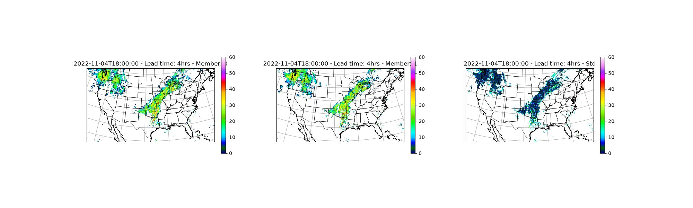
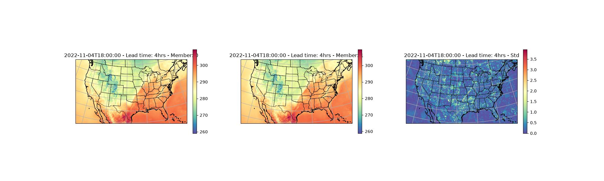

Running StormCast Ensemble Inference¶
Ensemble StormCast inference workflow.
This example will demonstrate how to run a simple inference workflow to generate a ensemble forecast using StormCast. For details about the stormcast model, see
Set Up¶
All workflows inside Earth2Studio require constructed components to be
handed to them. In this example, we run an ensemble forecast with
[earth2studio.run.Pipeline][], where each ensemble member
is a work item produced by earth2studio.run.work_items.
We need the following:
- Prognostic Model: Use the built in StormCast-CONUS Model
earth2studio.models.px.StormCastCONUS. We will not perturb the initial data because StormCast has stochastic generation of ensemble members. - Datasource: Pull data from the HRRR data api
earth2studio.data.HRRR. - IO Backend: Let's save the outputs into a Zarr store
earth2studio.io.ZarrBackend.
StormCast-CONUS also requires global conditioning. Its default sources supply
GFS_FX earth2studio.data.GFS_FX forecasts regridded
onto the HRRR grid.
import numpy as np
from loguru import logger
from tqdm import tqdm
logger.remove()
logger.add(lambda msg: tqdm.write(msg, end=""), colorize=True)
import os
os.makedirs("outputs", exist_ok=True)
from dotenv import load_dotenv
load_dotenv() # TODO: make common example prep function
from earth2studio.data import HRRR
from earth2studio.io import ZarrBackend
from earth2studio.models.px import StormCastCONUS
# Load the default model package which downloads the checkpoint from HuggingFace.
# Global conditioning comes from the model's default sources: GFS forecasts
# regridded onto the HRRR grid.
package = StormCastCONUS.load_default_package()
model = StormCastCONUS.load_model(package)
# Create the data source
data = HRRR()
# Create the IO handler, store in memory
io = ZarrBackend()
Execute the Workflow¶
With all components initialized, the pipeline fetches the initial condition and conditioning, rolls out each ensemble member and writes it into the IO object, which can then be used to post process. Some have additional APIs that can be handy for post-processing or saving to file. Check the API docs for more information.
For the forecast we will predict for 4 hours
import torch
from earth2studio.run import Pipeline, work_items
nsteps = 4
nensemble = 2
date = "2022-11-04T18:00:00"
items = work_items(
[np.datetime64(date)],
final_lead_time=np.timedelta64(nsteps, "h"),
members=nensemble,
)
Pipeline.from_model(
model,
data,
output={"forecast": io},
output_variables={"forecast": ["t2m", "refc"]},
device="cuda" if torch.cuda.is_available() else "cpu",
).run(items)
print(io.root.tree())
Console output1731 lines
2026-11-19 18:58:59.026 | DEBUG | earth2studio.run.work:work_items:138 - Built 2 work items from 1 times and 2 members
2026-11-19 18:59:01.939 | DEBUG | earth2studio.run.output:prepare:115 - Adding arrays for stream 'forecast'
Fetching HRRR data: 0%| | 0/99 [00:00<?, ?it/s]
2026-11-19 18:59:02.448 | DEBUG | earth2studio.data.hrrr:fetch_array:452 - Fetching HRRR grib file: noaa-hrrr-bdp-pds/hrrr.20221104/conus/hrrr.t18z.wrfsfcf00.grib2 45506480-2381615
Fetching HRRR data: 0%| | 0/99 [00:00<?, ?it/s]
2026-11-19 18:59:02.449 | DEBUG | earth2studio.data.hrrr:fetch_array:452 - Fetching HRRR grib file: noaa-hrrr-bdp-pds/hrrr.20221104/conus/hrrr.t18z.wrfsfcf00.grib2 47888095-2381615
Fetching HRRR data: 0%| | 0/99 [00:00<?, ?it/s]
2026-11-19 18:59:02.449 | DEBUG | earth2studio.data.hrrr:fetch_array:452 - Fetching HRRR grib file: noaa-hrrr-bdp-pds/hrrr.20221104/conus/hrrr.t18z.wrfsfcf00.grib2 38189928-1192309
Fetching HRRR data: 0%| | 0/99 [00:00<?, ?it/s]
2026-11-19 18:59:02.450 | DEBUG | earth2studio.data.hrrr:fetch_array:452 - Fetching HRRR grib file: noaa-hrrr-bdp-pds/hrrr.20221104/conus/hrrr.t18z.wrfsfcf00.grib2 26569266-640071
Fetching HRRR data: 0%| | 0/99 [00:00<?, ?it/s]
2026-11-19 18:59:02.452 | DEBUG | earth2studio.data.hrrr:fetch_array:452 - Fetching HRRR grib file: noaa-hrrr-bdp-pds/hrrr.20221104/conus/hrrr.t18z.wrfnatf00.grib2 9371516-1146067
Fetching HRRR data: 0%| | 0/99 [00:00<?, ?it/s]
2026-11-19 18:59:02.453 | DEBUG | earth2studio.data.hrrr:fetch_array:452 - Fetching HRRR grib file: noaa-hrrr-bdp-pds/hrrr.20221104/conus/hrrr.t18z.wrfnatf00.grib2 23462419-1151696
Fetching HRRR data: 0%| | 0/99 [00:00<?, ?it/s]
2026-11-19 18:59:02.455 | DEBUG | earth2studio.data.hrrr:fetch_array:452 - Fetching HRRR grib file: noaa-hrrr-bdp-pds/hrrr.20221104/conus/hrrr.t18z.wrfnatf00.grib2 37732730-1138855
Fetching HRRR data: 0%| | 0/99 [00:00<?, ?it/s]
2026-11-19 18:59:02.457 | DEBUG | earth2studio.data.hrrr:fetch_array:452 - Fetching HRRR grib file: noaa-hrrr-bdp-pds/hrrr.20221104/conus/hrrr.t18z.wrfnatf00.grib2 51947556-1106539
Fetching HRRR data: 0%| | 0/99 [00:00<?, ?it/s]
2026-11-19 18:59:02.458 | DEBUG | earth2studio.data.hrrr:fetch_array:452 - Fetching HRRR grib file: noaa-hrrr-bdp-pds/hrrr.20221104/conus/hrrr.t18z.wrfnatf00.grib2 67062010-1067237
Fetching HRRR data: 0%| | 0/99 [00:00<?, ?it/s]
2026-11-19 18:59:02.460 | DEBUG | earth2studio.data.hrrr:fetch_array:452 - Fetching HRRR grib file: noaa-hrrr-bdp-pds/hrrr.20221104/conus/hrrr.t18z.wrfnatf00.grib2 82598580-1040255
Fetching HRRR data: 0%| | 0/99 [00:00<?, ?it/s]
2026-11-19 18:59:02.461 | DEBUG | earth2studio.data.hrrr:fetch_array:452 - Fetching HRRR grib file: noaa-hrrr-bdp-pds/hrrr.20221104/conus/hrrr.t18z.wrfnatf00.grib2 98519632-1035434
Fetching HRRR data: 0%| | 0/99 [00:00<?, ?it/s]
2026-11-19 18:59:02.463 | DEBUG | earth2studio.data.hrrr:fetch_array:452 - Fetching HRRR grib file: noaa-hrrr-bdp-pds/hrrr.20221104/conus/hrrr.t18z.wrfnatf00.grib2 114673609-1039508
Fetching HRRR data: 0%| | 0/99 [00:00<?, ?it/s]
2026-11-19 18:59:02.465 | DEBUG | earth2studio.data.hrrr:fetch_array:452 - Fetching HRRR grib file: noaa-hrrr-bdp-pds/hrrr.20221104/conus/hrrr.t18z.wrfnatf00.grib2 130512279-1024616
Fetching HRRR data: 0%| | 0/99 [00:00<?, ?it/s]
2026-11-19 18:59:02.466 | DEBUG | earth2studio.data.hrrr:fetch_array:452 - Fetching HRRR grib file: noaa-hrrr-bdp-pds/hrrr.20221104/conus/hrrr.t18z.wrfnatf00.grib2 145778799-1003667
Fetching HRRR data: 0%| | 0/99 [00:00<?, ?it/s]
2026-11-19 18:59:02.468 | DEBUG | earth2studio.data.hrrr:fetch_array:452 - Fetching HRRR grib file: noaa-hrrr-bdp-pds/hrrr.20221104/conus/hrrr.t18z.wrfnatf00.grib2 160228896-982616
Fetching HRRR data: 0%| | 0/99 [00:00<?, ?it/s]
2026-11-19 18:59:02.469 | DEBUG | earth2studio.data.hrrr:fetch_array:452 - Fetching HRRR grib file: noaa-hrrr-bdp-pds/hrrr.20221104/conus/hrrr.t18z.wrfnatf00.grib2 187448812-937850
Fetching HRRR data: 0%| | 0/99 [00:00<?, ?it/s]
2026-11-19 18:59:02.471 | DEBUG | earth2studio.data.hrrr:fetch_array:452 - Fetching HRRR grib file: noaa-hrrr-bdp-pds/hrrr.20221104/conus/hrrr.t18z.wrfnatf00.grib2 214553478-898609
Fetching HRRR data: 0%| | 0/99 [00:00<?, ?it/s]
2026-11-19 18:59:02.473 | DEBUG | earth2studio.data.hrrr:fetch_array:452 - Fetching HRRR grib file: noaa-hrrr-bdp-pds/hrrr.20221104/conus/hrrr.t18z.wrfnatf00.grib2 277008297-831964
Fetching HRRR data: 0%| | 0/99 [00:00<?, ?it/s]
2026-11-19 18:59:02.474 | DEBUG | earth2studio.data.hrrr:fetch_array:452 - Fetching HRRR grib file: noaa-hrrr-bdp-pds/hrrr.20221104/conus/hrrr.t18z.wrfnatf00.grib2 330412458-821630
Fetching HRRR data: 0%| | 0/99 [00:00<?, ?it/s]
2026-11-19 18:59:02.476 | DEBUG | earth2studio.data.hrrr:fetch_array:452 - Fetching HRRR grib file: noaa-hrrr-bdp-pds/hrrr.20221104/conus/hrrr.t18z.wrfnatf00.grib2 379113535-819777
Fetching HRRR data: 0%| | 0/99 [00:00<?, ?it/s]
2026-11-19 18:59:02.478 | DEBUG | earth2studio.data.hrrr:fetch_array:452 - Fetching HRRR grib file: noaa-hrrr-bdp-pds/hrrr.20221104/conus/hrrr.t18z.wrfnatf00.grib2 10517583-1131860
Fetching HRRR data: 0%| | 0/99 [00:00<?, ?it/s]
2026-11-19 18:59:02.480 | DEBUG | earth2studio.data.hrrr:fetch_array:452 - Fetching HRRR grib file: noaa-hrrr-bdp-pds/hrrr.20221104/conus/hrrr.t18z.wrfnatf00.grib2 24614115-1135617
Fetching HRRR data: 0%| | 0/99 [00:00<?, ?it/s]
2026-11-19 18:59:02.481 | DEBUG | earth2studio.data.hrrr:fetch_array:452 - Fetching HRRR grib file: noaa-hrrr-bdp-pds/hrrr.20221104/conus/hrrr.t18z.wrfnatf00.grib2 38871585-1116455
Fetching HRRR data: 0%| | 0/99 [00:00<?, ?it/s]
2026-11-19 18:59:02.483 | DEBUG | earth2studio.data.hrrr:fetch_array:452 - Fetching HRRR grib file: noaa-hrrr-bdp-pds/hrrr.20221104/conus/hrrr.t18z.wrfnatf00.grib2 53054095-1095203
Fetching HRRR data: 0%| | 0/99 [00:00<?, ?it/s]
2026-11-19 18:59:02.484 | DEBUG | earth2studio.data.hrrr:fetch_array:452 - Fetching HRRR grib file: noaa-hrrr-bdp-pds/hrrr.20221104/conus/hrrr.t18z.wrfnatf00.grib2 68129247-1077788
Fetching HRRR data: 0%| | 0/99 [00:00<?, ?it/s]
2026-11-19 18:59:02.486 | DEBUG | earth2studio.data.hrrr:fetch_array:452 - Fetching HRRR grib file: noaa-hrrr-bdp-pds/hrrr.20221104/conus/hrrr.t18z.wrfnatf00.grib2 83638835-1072872
Fetching HRRR data: 0%| | 0/99 [00:00<?, ?it/s]
2026-11-19 18:59:02.488 | DEBUG | earth2studio.data.hrrr:fetch_array:452 - Fetching HRRR grib file: noaa-hrrr-bdp-pds/hrrr.20221104/conus/hrrr.t18z.wrfnatf00.grib2 99555066-1078556
Fetching HRRR data: 0%| | 0/99 [00:00<?, ?it/s]
2026-11-19 18:59:02.489 | DEBUG | earth2studio.data.hrrr:fetch_array:452 - Fetching HRRR grib file: noaa-hrrr-bdp-pds/hrrr.20221104/conus/hrrr.t18z.wrfnatf00.grib2 115713117-1088586
Fetching HRRR data: 0%| | 0/99 [00:00<?, ?it/s]
2026-11-19 18:59:02.491 | DEBUG | earth2studio.data.hrrr:fetch_array:452 - Fetching HRRR grib file: noaa-hrrr-bdp-pds/hrrr.20221104/conus/hrrr.t18z.wrfnatf00.grib2 131536895-1079699
Fetching HRRR data: 0%| | 0/99 [00:00<?, ?it/s]
2026-11-19 18:59:02.492 | DEBUG | earth2studio.data.hrrr:fetch_array:452 - Fetching HRRR grib file: noaa-hrrr-bdp-pds/hrrr.20221104/conus/hrrr.t18z.wrfnatf00.grib2 146782466-1060468
Fetching HRRR data: 0%| | 0/99 [00:00<?, ?it/s]
2026-11-19 18:59:02.494 | DEBUG | earth2studio.data.hrrr:fetch_array:452 - Fetching HRRR grib file: noaa-hrrr-bdp-pds/hrrr.20221104/conus/hrrr.t18z.wrfnatf00.grib2 161211512-1036351
Fetching HRRR data: 0%| | 0/99 [00:00<?, ?it/s]
2026-11-19 18:59:02.496 | DEBUG | earth2studio.data.hrrr:fetch_array:452 - Fetching HRRR grib file: noaa-hrrr-bdp-pds/hrrr.20221104/conus/hrrr.t18z.wrfnatf00.grib2 188386662-984328
Fetching HRRR data: 0%| | 0/99 [00:00<?, ?it/s]
2026-11-19 18:59:02.497 | DEBUG | earth2studio.data.hrrr:fetch_array:452 - Fetching HRRR grib file: noaa-hrrr-bdp-pds/hrrr.20221104/conus/hrrr.t18z.wrfnatf00.grib2 215452087-940036
Fetching HRRR data: 0%| | 0/99 [00:00<?, ?it/s]
2026-11-19 18:59:02.499 | DEBUG | earth2studio.data.hrrr:fetch_array:452 - Fetching HRRR grib file: noaa-hrrr-bdp-pds/hrrr.20221104/conus/hrrr.t18z.wrfnatf00.grib2 277840261-825209
Fetching HRRR data: 0%| | 0/99 [00:00<?, ?it/s]
2026-11-19 18:59:02.500 | DEBUG | earth2studio.data.hrrr:fetch_array:452 - Fetching HRRR grib file: noaa-hrrr-bdp-pds/hrrr.20221104/conus/hrrr.t18z.wrfnatf00.grib2 331234088-839627
Fetching HRRR data: 0%| | 0/99 [00:00<?, ?it/s]
2026-11-19 18:59:02.502 | DEBUG | earth2studio.data.hrrr:fetch_array:452 - Fetching HRRR grib file: noaa-hrrr-bdp-pds/hrrr.20221104/conus/hrrr.t18z.wrfnatf00.grib2 379933312-816848
Fetching HRRR data: 0%| | 0/99 [00:00<?, ?it/s]
2026-11-19 18:59:02.504 | DEBUG | earth2studio.data.hrrr:fetch_array:452 - Fetching HRRR grib file: noaa-hrrr-bdp-pds/hrrr.20221104/conus/hrrr.t18z.wrfnatf00.grib2 6818348-1143738
Fetching HRRR data: 0%| | 0/99 [00:00<?, ?it/s]
2026-11-19 18:59:02.505 | DEBUG | earth2studio.data.hrrr:fetch_array:452 - Fetching HRRR grib file: noaa-hrrr-bdp-pds/hrrr.20221104/conus/hrrr.t18z.wrfnatf00.grib2 20960512-1120815
Fetching HRRR data: 0%| | 0/99 [00:00<?, ?it/s]
2026-11-19 18:59:02.507 | DEBUG | earth2studio.data.hrrr:fetch_array:452 - Fetching HRRR grib file: noaa-hrrr-bdp-pds/hrrr.20221104/conus/hrrr.t18z.wrfnatf00.grib2 35259792-1108561
Fetching HRRR data: 0%| | 0/99 [00:00<?, ?it/s]
2026-11-19 18:59:02.509 | DEBUG | earth2studio.data.hrrr:fetch_array:452 - Fetching HRRR grib file: noaa-hrrr-bdp-pds/hrrr.20221104/conus/hrrr.t18z.wrfnatf00.grib2 49495191-1093525
Fetching HRRR data: 0%| | 0/99 [00:00<?, ?it/s]
2026-11-19 18:59:02.510 | DEBUG | earth2studio.data.hrrr:fetch_array:452 - Fetching HRRR grib file: noaa-hrrr-bdp-pds/hrrr.20221104/conus/hrrr.t18z.wrfnatf00.grib2 64591495-1080192
Fetching HRRR data: 0%| | 0/99 [00:00<?, ?it/s]
2026-11-19 18:59:02.512 | DEBUG | earth2studio.data.hrrr:fetch_array:452 - Fetching HRRR grib file: noaa-hrrr-bdp-pds/hrrr.20221104/conus/hrrr.t18z.wrfnatf00.grib2 80079487-1069877
Fetching HRRR data: 0%| | 0/99 [00:00<?, ?it/s]
2026-11-19 18:59:02.513 | DEBUG | earth2studio.data.hrrr:fetch_array:452 - Fetching HRRR grib file: noaa-hrrr-bdp-pds/hrrr.20221104/conus/hrrr.t18z.wrfnatf00.grib2 95953600-1061152
Fetching HRRR data: 0%| | 0/99 [00:00<?, ?it/s]
2026-11-19 18:59:02.515 | DEBUG | earth2studio.data.hrrr:fetch_array:452 - Fetching HRRR grib file: noaa-hrrr-bdp-pds/hrrr.20221104/conus/hrrr.t18z.wrfnatf00.grib2 112063128-1059334
Fetching HRRR data: 0%| | 0/99 [00:00<?, ?it/s]
2026-11-19 18:59:02.517 | DEBUG | earth2studio.data.hrrr:fetch_array:452 - Fetching HRRR grib file: noaa-hrrr-bdp-pds/hrrr.20221104/conus/hrrr.t18z.wrfnatf00.grib2 127945020-1046677
Fetching HRRR data: 0%| | 0/99 [00:00<?, ?it/s]
2026-11-19 18:59:02.518 | DEBUG | earth2studio.data.hrrr:fetch_array:452 - Fetching HRRR grib file: noaa-hrrr-bdp-pds/hrrr.20221104/conus/hrrr.t18z.wrfnatf00.grib2 143304187-1019776
Fetching HRRR data: 0%| | 0/99 [00:00<?, ?it/s]
2026-11-19 18:59:02.520 | DEBUG | earth2studio.data.hrrr:fetch_array:452 - Fetching HRRR grib file: noaa-hrrr-bdp-pds/hrrr.20221104/conus/hrrr.t18z.wrfnatf00.grib2 157884019-984193
Fetching HRRR data: 0%| | 0/99 [00:00<?, ?it/s]
2026-11-19 18:59:02.521 | DEBUG | earth2studio.data.hrrr:fetch_array:452 - Fetching HRRR grib file: noaa-hrrr-bdp-pds/hrrr.20221104/conus/hrrr.t18z.wrfnatf00.grib2 185285645-944504
Fetching HRRR data: 0%| | 0/99 [00:00<?, ?it/s]
2026-11-19 18:59:02.523 | DEBUG | earth2studio.data.hrrr:fetch_array:452 - Fetching HRRR grib file: noaa-hrrr-bdp-pds/hrrr.20221104/conus/hrrr.t18z.wrfnatf00.grib2 211849418-917239
Fetching HRRR data: 0%| | 0/99 [00:00<?, ?it/s]
2026-11-19 18:59:02.525 | DEBUG | earth2studio.data.hrrr:fetch_array:452 - Fetching HRRR grib file: noaa-hrrr-bdp-pds/hrrr.20221104/conus/hrrr.t18z.wrfnatf00.grib2 274934262-816553
Fetching HRRR data: 0%| | 0/99 [00:00<?, ?it/s]
2026-11-19 18:59:02.526 | DEBUG | earth2studio.data.hrrr:fetch_array:452 - Fetching HRRR grib file: noaa-hrrr-bdp-pds/hrrr.20221104/conus/hrrr.t18z.wrfnatf00.grib2 328180840-679420
Fetching HRRR data: 0%| | 0/99 [00:00<?, ?it/s]
2026-11-19 18:59:02.528 | DEBUG | earth2studio.data.hrrr:fetch_array:452 - Fetching HRRR grib file: noaa-hrrr-bdp-pds/hrrr.20221104/conus/hrrr.t18z.wrfnatf00.grib2 377396933-646774
Fetching HRRR data: 0%| | 0/99 [00:00<?, ?it/s]
2026-11-19 18:59:02.529 | DEBUG | earth2studio.data.hrrr:fetch_array:452 - Fetching HRRR grib file: noaa-hrrr-bdp-pds/hrrr.20221104/conus/hrrr.t18z.wrfnatf00.grib2 7962086-1409430
Fetching HRRR data: 0%| | 0/99 [00:00<?, ?it/s]
2026-11-19 18:59:02.531 | DEBUG | earth2studio.data.hrrr:fetch_array:452 - Fetching HRRR grib file: noaa-hrrr-bdp-pds/hrrr.20221104/conus/hrrr.t18z.wrfnatf00.grib2 22081327-1381092
Fetching HRRR data: 0%| | 0/99 [00:00<?, ?it/s]
2026-11-19 18:59:02.533 | DEBUG | earth2studio.data.hrrr:fetch_array:452 - Fetching HRRR grib file: noaa-hrrr-bdp-pds/hrrr.20221104/conus/hrrr.t18z.wrfnatf00.grib2 36368353-1364377
Fetching HRRR data: 0%| | 0/99 [00:00<?, ?it/s]
2026-11-19 18:59:02.534 | DEBUG | earth2studio.data.hrrr:fetch_array:452 - Fetching HRRR grib file: noaa-hrrr-bdp-pds/hrrr.20221104/conus/hrrr.t18z.wrfnatf00.grib2 50588716-1358840
Fetching HRRR data: 0%| | 0/99 [00:00<?, ?it/s]
2026-11-19 18:59:02.536 | DEBUG | earth2studio.data.hrrr:fetch_array:452 - Fetching HRRR grib file: noaa-hrrr-bdp-pds/hrrr.20221104/conus/hrrr.t18z.wrfnatf00.grib2 65671687-1390323
Fetching HRRR data: 0%| | 0/99 [00:00<?, ?it/s]
2026-11-19 18:59:02.537 | DEBUG | earth2studio.data.hrrr:fetch_array:452 - Fetching HRRR grib file: noaa-hrrr-bdp-pds/hrrr.20221104/conus/hrrr.t18z.wrfnatf00.grib2 81149364-1449216
Fetching HRRR data: 0%| | 0/99 [00:00<?, ?it/s]
2026-11-19 18:59:02.539 | DEBUG | earth2studio.data.hrrr:fetch_array:452 - Fetching HRRR grib file: noaa-hrrr-bdp-pds/hrrr.20221104/conus/hrrr.t18z.wrfnatf00.grib2 97014752-1504880
Fetching HRRR data: 0%| | 0/99 [00:00<?, ?it/s]
2026-11-19 18:59:02.540 | DEBUG | earth2studio.data.hrrr:fetch_array:452 - Fetching HRRR grib file: noaa-hrrr-bdp-pds/hrrr.20221104/conus/hrrr.t18z.wrfnatf00.grib2 113122462-1551147
Fetching HRRR data: 0%| | 0/99 [00:00<?, ?it/s]
2026-11-19 18:59:02.542 | DEBUG | earth2studio.data.hrrr:fetch_array:452 - Fetching HRRR grib file: noaa-hrrr-bdp-pds/hrrr.20221104/conus/hrrr.t18z.wrfnatf00.grib2 128991697-1520582
Fetching HRRR data: 0%| | 0/99 [00:00<?, ?it/s]
2026-11-19 18:59:02.544 | DEBUG | earth2studio.data.hrrr:fetch_array:452 - Fetching HRRR grib file: noaa-hrrr-bdp-pds/hrrr.20221104/conus/hrrr.t18z.wrfnatf00.grib2 144323963-1454836
Fetching HRRR data: 0%| | 0/99 [00:00<?, ?it/s]
2026-11-19 18:59:02.545 | DEBUG | earth2studio.data.hrrr:fetch_array:452 - Fetching HRRR grib file: noaa-hrrr-bdp-pds/hrrr.20221104/conus/hrrr.t18z.wrfnatf00.grib2 158868212-1360684
Fetching HRRR data: 0%| | 0/99 [00:00<?, ?it/s]
2026-11-19 18:59:02.547 | DEBUG | earth2studio.data.hrrr:fetch_array:452 - Fetching HRRR grib file: noaa-hrrr-bdp-pds/hrrr.20221104/conus/hrrr.t18z.wrfnatf00.grib2 186230149-1218663
Fetching HRRR data: 0%| | 0/99 [00:00<?, ?it/s]
Fetching HRRR data: 1%| | 1/99 [00:02<03:27, 2.12s/it]
Fetching HRRR data: 2%|▏ | 2/99 [00:02<01:47, 1.11s/it]
2026-11-19 18:59:05.376 | DEBUG | earth2studio.data.hrrr:fetch_array:452 - Fetching HRRR grib file: noaa-hrrr-bdp-pds/hrrr.20221104/conus/hrrr.t18z.wrfnatf00.grib2 275750815-1257482
Fetching HRRR data: 2%|▏ | 2/99 [00:02<01:47, 1.11s/it]
Fetching HRRR data: 3%|▎ | 3/99 [00:02<01:18, 1.22it/s]
2026-11-19 18:59:05.444 | DEBUG | earth2studio.data.hrrr:fetch_array:452 - Fetching HRRR grib file: noaa-hrrr-bdp-pds/hrrr.20221104/conus/hrrr.t18z.wrfnatf00.grib2 328860260-1552198
Fetching HRRR data: 3%|▎ | 3/99 [00:02<01:18, 1.22it/s]
2026-11-19 18:59:05.533 | DEBUG | earth2studio.data.hrrr:fetch_array:452 - Fetching HRRR grib file: noaa-hrrr-bdp-pds/hrrr.20221104/conus/hrrr.t18z.wrfnatf00.grib2 378043707-1069828
Fetching HRRR data: 4%|▍ | 4/99 [00:03<01:17, 1.22it/s]
2026-11-19 18:59:05.538 | DEBUG | earth2studio.data.hrrr:fetch_array:452 - Fetching HRRR grib file: noaa-hrrr-bdp-pds/hrrr.20221104/conus/hrrr.t18z.wrfnatf00.grib2 4533833-2284515
Fetching HRRR data: 5%|▌ | 5/99 [00:03<01:17, 1.22it/s]
Fetching HRRR data: 6%|▌ | 6/99 [00:03<00:27, 3.34it/s]
2026-11-19 18:59:05.542 | DEBUG | earth2studio.data.hrrr:fetch_array:452 - Fetching HRRR grib file: noaa-hrrr-bdp-pds/hrrr.20221104/conus/hrrr.t18z.wrfnatf00.grib2 18594556-2365956
Fetching HRRR data: 6%|▌ | 6/99 [00:03<00:27, 3.34it/s]
2026-11-19 18:59:05.545 | DEBUG | earth2studio.data.hrrr:fetch_array:452 - Fetching HRRR grib file: noaa-hrrr-bdp-pds/hrrr.20221104/conus/hrrr.t18z.wrfnatf00.grib2 32884021-2375771
Fetching HRRR data: 7%|▋ | 7/99 [00:03<00:27, 3.34it/s]
2026-11-19 18:59:05.549 | DEBUG | earth2studio.data.hrrr:fetch_array:452 - Fetching HRRR grib file: noaa-hrrr-bdp-pds/hrrr.20221104/conus/hrrr.t18z.wrfnatf00.grib2 47099961-2395230
Fetching HRRR data: 8%|▊ | 8/99 [00:03<00:27, 3.34it/s]
2026-11-19 18:59:05.553 | DEBUG | earth2studio.data.hrrr:fetch_array:452 - Fetching HRRR grib file: noaa-hrrr-bdp-pds/hrrr.20221104/conus/hrrr.t18z.wrfnatf00.grib2 62169411-2422084
Fetching HRRR data: 9%|▉ | 9/99 [00:03<00:26, 3.34it/s]
2026-11-19 18:59:05.557 | DEBUG | earth2studio.data.hrrr:fetch_array:452 - Fetching HRRR grib file: noaa-hrrr-bdp-pds/hrrr.20221104/conus/hrrr.t18z.wrfnatf00.grib2 77632962-2446525
Fetching HRRR data: 10%|█ | 10/99 [00:03<00:26, 3.34it/s]
2026-11-19 18:59:05.562 | DEBUG | earth2studio.data.hrrr:fetch_array:452 - Fetching HRRR grib file: noaa-hrrr-bdp-pds/hrrr.20221104/conus/hrrr.t18z.wrfnatf00.grib2 93487980-2465620
Fetching HRRR data: 11%|█ | 11/99 [00:03<00:26, 3.34it/s]
2026-11-19 18:59:05.567 | DEBUG | earth2studio.data.hrrr:fetch_array:452 - Fetching HRRR grib file: noaa-hrrr-bdp-pds/hrrr.20221104/conus/hrrr.t18z.wrfnatf00.grib2 109580824-2482304
Fetching HRRR data: 12%|█▏ | 12/99 [00:03<00:26, 3.34it/s]
2026-11-19 18:59:05.571 | DEBUG | earth2studio.data.hrrr:fetch_array:452 - Fetching HRRR grib file: noaa-hrrr-bdp-pds/hrrr.20221104/conus/hrrr.t18z.wrfnatf00.grib2 125447922-2497098
Fetching HRRR data: 13%|█▎ | 13/99 [00:03<00:25, 3.34it/s]
2026-11-19 18:59:05.575 | DEBUG | earth2studio.data.hrrr:fetch_array:452 - Fetching HRRR grib file: noaa-hrrr-bdp-pds/hrrr.20221104/conus/hrrr.t18z.wrfnatf00.grib2 140798645-2505542
Fetching HRRR data: 14%|█▍ | 14/99 [00:03<00:25, 3.34it/s]
2026-11-19 18:59:05.578 | DEBUG | earth2studio.data.hrrr:fetch_array:452 - Fetching HRRR grib file: noaa-hrrr-bdp-pds/hrrr.20221104/conus/hrrr.t18z.wrfnatf00.grib2 155375094-2508925
Fetching HRRR data: 15%|█▌ | 15/99 [00:03<00:25, 3.34it/s]
2026-11-19 18:59:05.580 | DEBUG | earth2studio.data.hrrr:fetch_array:452 - Fetching HRRR grib file: noaa-hrrr-bdp-pds/hrrr.20221104/conus/hrrr.t18z.wrfnatf00.grib2 182788585-2497060
Fetching HRRR data: 16%|█▌ | 16/99 [00:03<00:24, 3.34it/s]
2026-11-19 18:59:05.583 | DEBUG | earth2studio.data.hrrr:fetch_array:452 - Fetching HRRR grib file: noaa-hrrr-bdp-pds/hrrr.20221104/conus/hrrr.t18z.wrfnatf00.grib2 209389153-2460265
Fetching HRRR data: 17%|█▋ | 17/99 [00:03<00:24, 3.34it/s]
2026-11-19 18:59:05.586 | DEBUG | earth2studio.data.hrrr:fetch_array:452 - Fetching HRRR grib file: noaa-hrrr-bdp-pds/hrrr.20221104/conus/hrrr.t18z.wrfnatf00.grib2 272723954-2210308
Fetching HRRR data: 18%|█▊ | 18/99 [00:03<00:24, 3.34it/s]
2026-11-19 18:59:05.591 | DEBUG | earth2studio.data.hrrr:fetch_array:452 - Fetching HRRR grib file: noaa-hrrr-bdp-pds/hrrr.20221104/conus/hrrr.t18z.wrfnatf00.grib2 326303134-1877706
Fetching HRRR data: 19%|█▉ | 19/99 [00:03<00:23, 3.34it/s]
2026-11-19 18:59:05.594 | DEBUG | earth2studio.data.hrrr:fetch_array:452 - Fetching HRRR grib file: noaa-hrrr-bdp-pds/hrrr.20221104/conus/hrrr.t18z.wrfnatf00.grib2 375936301-1460632
Fetching HRRR data: 20%|██ | 20/99 [00:03<00:23, 3.34it/s]
2026-11-19 18:59:05.596 | DEBUG | earth2studio.data.hrrr:fetch_array:452 - Fetching HRRR grib file: noaa-hrrr-bdp-pds/hrrr.20221104/conus/hrrr.t18z.wrfnatf00.grib2 0-2243979
Fetching HRRR data: 21%|██ | 21/99 [00:03<00:23, 3.34it/s]
2026-11-19 18:59:05.601 | DEBUG | earth2studio.data.hrrr:fetch_array:452 - Fetching HRRR grib file: noaa-hrrr-bdp-pds/hrrr.20221104/conus/hrrr.t18z.wrfnatf00.grib2 14022097-2243582
Fetching HRRR data: 22%|██▏ | 22/99 [00:03<00:23, 3.34it/s]
2026-11-19 18:59:05.603 | DEBUG | earth2studio.data.hrrr:fetch_array:452 - Fetching HRRR grib file: noaa-hrrr-bdp-pds/hrrr.20221104/conus/hrrr.t18z.wrfnatf00.grib2 28243575-2242405
Fetching HRRR data: 23%|██▎ | 23/99 [00:03<00:22, 3.34it/s]
2026-11-19 18:59:05.606 | DEBUG | earth2studio.data.hrrr:fetch_array:452 - Fetching HRRR grib file: noaa-hrrr-bdp-pds/hrrr.20221104/conus/hrrr.t18z.wrfnatf00.grib2 42476747-2241157
Fetching HRRR data: 24%|██▍ | 24/99 [00:03<00:22, 3.34it/s]
2026-11-19 18:59:05.610 | DEBUG | earth2studio.data.hrrr:fetch_array:452 - Fetching HRRR grib file: noaa-hrrr-bdp-pds/hrrr.20221104/conus/hrrr.t18z.wrfnatf00.grib2 56623065-2239832
Fetching HRRR data: 25%|██▌ | 25/99 [00:03<00:22, 3.34it/s]
2026-11-19 18:59:05.613 | DEBUG | earth2studio.data.hrrr:fetch_array:452 - Fetching HRRR grib file: noaa-hrrr-bdp-pds/hrrr.20221104/conus/hrrr.t18z.wrfnatf00.grib2 71843320-2238748
Fetching HRRR data: 26%|██▋ | 26/99 [00:03<00:21, 3.34it/s]
2026-11-19 18:59:05.615 | DEBUG | earth2studio.data.hrrr:fetch_array:452 - Fetching HRRR grib file: noaa-hrrr-bdp-pds/hrrr.20221104/conus/hrrr.t18z.wrfnatf00.grib2 87412288-2237675
Fetching HRRR data: 27%|██▋ | 27/99 [00:03<00:21, 3.34it/s]
2026-11-19 18:59:05.618 | DEBUG | earth2studio.data.hrrr:fetch_array:452 - Fetching HRRR grib file: noaa-hrrr-bdp-pds/hrrr.20221104/conus/hrrr.t18z.wrfnatf00.grib2 103335270-2236113
Fetching HRRR data: 28%|██▊ | 28/99 [00:03<00:21, 3.34it/s]
2026-11-19 18:59:05.622 | DEBUG | earth2studio.data.hrrr:fetch_array:452 - Fetching HRRR grib file: noaa-hrrr-bdp-pds/hrrr.20221104/conus/hrrr.t18z.wrfnatf00.grib2 119268253-2232519
Fetching HRRR data: 29%|██▉ | 29/99 [00:03<00:20, 3.34it/s]
2026-11-19 18:59:05.625 | DEBUG | earth2studio.data.hrrr:fetch_array:452 - Fetching HRRR grib file: noaa-hrrr-bdp-pds/hrrr.20221104/conus/hrrr.t18z.wrfnatf00.grib2 134941611-2210983
Fetching HRRR data: 30%|███ | 30/99 [00:03<00:20, 3.34it/s]
2026-11-19 18:59:05.628 | DEBUG | earth2studio.data.hrrr:fetch_array:452 - Fetching HRRR grib file: noaa-hrrr-bdp-pds/hrrr.20221104/conus/hrrr.t18z.wrfnatf00.grib2 149860207-2180501
Fetching HRRR data: 31%|███▏ | 31/99 [00:03<00:20, 3.34it/s]
2026-11-19 18:59:05.631 | DEBUG | earth2studio.data.hrrr:fetch_array:452 - Fetching HRRR grib file: noaa-hrrr-bdp-pds/hrrr.20221104/conus/hrrr.t18z.wrfnatf00.grib2 177885889-2133075
Fetching HRRR data: 32%|███▏ | 32/99 [00:03<00:20, 3.34it/s]
2026-11-19 18:59:05.634 | DEBUG | earth2studio.data.hrrr:fetch_array:452 - Fetching HRRR grib file: noaa-hrrr-bdp-pds/hrrr.20221104/conus/hrrr.t18z.wrfnatf00.grib2 204766598-2304208
Fetching HRRR data: 33%|███▎ | 33/99 [00:03<00:19, 3.34it/s]
2026-11-19 18:59:05.637 | DEBUG | earth2studio.data.hrrr:fetch_array:452 - Fetching HRRR grib file: noaa-hrrr-bdp-pds/hrrr.20221104/conus/hrrr.t18z.wrfnatf00.grib2 268792439-2224733
Fetching HRRR data: 34%|███▍ | 34/99 [00:03<00:19, 3.34it/s]
2026-11-19 18:59:05.641 | DEBUG | earth2studio.data.hrrr:fetch_array:452 - Fetching HRRR grib file: noaa-hrrr-bdp-pds/hrrr.20221104/conus/hrrr.t18z.wrfnatf00.grib2 212766657-1786821
Fetching HRRR data: 35%|███▌ | 35/99 [00:03<00:19, 3.34it/s]
Fetching HRRR data: 36%|███▋ | 36/99 [00:03<00:01, 31.52it/s]
2026-11-19 18:59:05.742 | DEBUG | earth2studio.data.hrrr:fetch_array:452 - Fetching HRRR grib file: noaa-hrrr-bdp-pds/hrrr.20221104/conus/hrrr.t18z.wrfsfcf00.grib2 0-428263
Fetching HRRR data: 65%|██████▍ | 64/99 [00:03<00:01, 31.52it/s]
Fetching HRRR data: 66%|██████▌ | 65/99 [00:04<00:01, 30.37it/s]
Fetching HRRR data: 75%|███████▍ | 74/99 [00:04<00:01, 22.59it/s]
Fetching HRRR data: 100%|██████████| 99/99 [00:05<00:00, 19.52it/s]
Fetching HRRR statistics: 0it [00:00, ?it/s]
Fetching HRRR statistics: 0it [00:00, ?it/s]
Fetching GFS data: 0%| | 0/26 [00:00<?, ?it/s]
2026-11-19 18:59:08.971 | DEBUG | earth2studio.data.gfs:fetch_array:435 - Fetching GFS grib file: noaa-gfs-bdp-pds/gfs.20221104/18/atmos/gfs.t18z.pgrb2.0p25.f001 424516679-960144
Fetching GFS data: 0%| | 0/26 [00:00<?, ?it/s]
2026-11-19 18:59:08.972 | DEBUG | earth2studio.data.gfs:fetch_array:435 - Fetching GFS grib file: noaa-gfs-bdp-pds/gfs.20221104/18/atmos/gfs.t18z.pgrb2.0p25.f001 425476823-936671
Fetching GFS data: 0%| | 0/26 [00:00<?, ?it/s]
2026-11-19 18:59:08.973 | DEBUG | earth2studio.data.gfs:fetch_array:435 - Fetching GFS grib file: noaa-gfs-bdp-pds/gfs.20221104/18/atmos/gfs.t18z.pgrb2.0p25.f001 418465084-875519
Fetching GFS data: 0%| | 0/26 [00:00<?, ?it/s]
2026-11-19 18:59:08.974 | DEBUG | earth2studio.data.gfs:fetch_array:435 - Fetching GFS grib file: noaa-gfs-bdp-pds/gfs.20221104/18/atmos/gfs.t18z.pgrb2.0p25.f001 439801520-1175028
Fetching GFS data: 0%| | 0/26 [00:00<?, ?it/s]
2026-11-19 18:59:08.975 | DEBUG | earth2studio.data.gfs:fetch_array:435 - Fetching GFS grib file: noaa-gfs-bdp-pds/gfs.20221104/18/atmos/gfs.t18z.pgrb2.0p25.f001 409339260-833898
Fetching GFS data: 0%| | 0/26 [00:00<?, ?it/s]
2026-11-19 18:59:08.976 | DEBUG | earth2studio.data.gfs:fetch_array:435 - Fetching GFS grib file: noaa-gfs-bdp-pds/gfs.20221104/18/atmos/gfs.t18z.pgrb2.0p25.f001 0-995376
Fetching GFS data: 0%| | 0/26 [00:00<?, ?it/s]
2026-11-19 18:59:08.977 | DEBUG | earth2studio.data.gfs:fetch_array:435 - Fetching GFS grib file: noaa-gfs-bdp-pds/gfs.20221104/18/atmos/gfs.t18z.pgrb2.0p25.f001 402038151-961630
Fetching GFS data: 0%| | 0/26 [00:00<?, ?it/s]
2026-11-19 18:59:08.979 | DEBUG | earth2studio.data.gfs:fetch_array:435 - Fetching GFS grib file: noaa-gfs-bdp-pds/gfs.20221104/18/atmos/gfs.t18z.pgrb2.0p25.f001 345377812-934577
Fetching GFS data: 0%| | 0/26 [00:00<?, ?it/s]
2026-11-19 18:59:08.980 | DEBUG | earth2studio.data.gfs:fetch_array:435 - Fetching GFS grib file: noaa-gfs-bdp-pds/gfs.20221104/18/atmos/gfs.t18z.pgrb2.0p25.f001 267842645-963561
Fetching GFS data: 0%| | 0/26 [00:00<?, ?it/s]
2026-11-19 18:59:08.981 | DEBUG | earth2studio.data.gfs:fetch_array:435 - Fetching GFS grib file: noaa-gfs-bdp-pds/gfs.20221104/18/atmos/gfs.t18z.pgrb2.0p25.f001 213254470-595873
Fetching GFS data: 0%| | 0/26 [00:00<?, ?it/s]
2026-11-19 18:59:08.982 | DEBUG | earth2studio.data.gfs:fetch_array:435 - Fetching GFS grib file: noaa-gfs-bdp-pds/gfs.20221104/18/atmos/gfs.t18z.pgrb2.0p25.f001 402999781-946576
Fetching GFS data: 0%| | 0/26 [00:00<?, ?it/s]
2026-11-19 18:59:08.983 | DEBUG | earth2studio.data.gfs:fetch_array:435 - Fetching GFS grib file: noaa-gfs-bdp-pds/gfs.20221104/18/atmos/gfs.t18z.pgrb2.0p25.f001 346312389-937672
Fetching GFS data: 0%| | 0/26 [00:00<?, ?it/s]
2026-11-19 18:59:08.984 | DEBUG | earth2studio.data.gfs:fetch_array:435 - Fetching GFS grib file: noaa-gfs-bdp-pds/gfs.20221104/18/atmos/gfs.t18z.pgrb2.0p25.f001 268806206-929616
Fetching GFS data: 0%| | 0/26 [00:00<?, ?it/s]
2026-11-19 18:59:08.985 | DEBUG | earth2studio.data.gfs:fetch_array:435 - Fetching GFS grib file: noaa-gfs-bdp-pds/gfs.20221104/18/atmos/gfs.t18z.pgrb2.0p25.f001 213850343-604406
Fetching GFS data: 0%| | 0/26 [00:00<?, ?it/s]
2026-11-19 18:59:08.986 | DEBUG | earth2studio.data.gfs:fetch_array:435 - Fetching GFS grib file: noaa-gfs-bdp-pds/gfs.20221104/18/atmos/gfs.t18z.pgrb2.0p25.f001 407354215-949794
Fetching GFS data: 0%| | 0/26 [00:00<?, ?it/s]
2026-11-19 18:59:08.987 | DEBUG | earth2studio.data.gfs:fetch_array:435 - Fetching GFS grib file: noaa-gfs-bdp-pds/gfs.20221104/18/atmos/gfs.t18z.pgrb2.0p25.f001 338690504-894163
Fetching GFS data: 0%| | 0/26 [00:00<?, ?it/s]
2026-11-19 18:59:08.989 | DEBUG | earth2studio.data.gfs:fetch_array:435 - Fetching GFS grib file: noaa-gfs-bdp-pds/gfs.20221104/18/atmos/gfs.t18z.pgrb2.0p25.f001 261484572-806473
Fetching GFS data: 0%| | 0/26 [00:00<?, ?it/s]
2026-11-19 18:59:08.990 | DEBUG | earth2studio.data.gfs:fetch_array:435 - Fetching GFS grib file: noaa-gfs-bdp-pds/gfs.20221104/18/atmos/gfs.t18z.pgrb2.0p25.f001 206992042-733841
Fetching GFS data: 0%| | 0/26 [00:00<?, ?it/s]
2026-11-19 18:59:08.991 | DEBUG | earth2studio.data.gfs:fetch_array:435 - Fetching GFS grib file: noaa-gfs-bdp-pds/gfs.20221104/18/atmos/gfs.t18z.pgrb2.0p25.f001 397071113-856997
Fetching GFS data: 0%| | 0/26 [00:00<?, ?it/s]
2026-11-19 18:59:08.992 | DEBUG | earth2studio.data.gfs:fetch_array:435 - Fetching GFS grib file: noaa-gfs-bdp-pds/gfs.20221104/18/atmos/gfs.t18z.pgrb2.0p25.f001 339584667-839992
Fetching GFS data: 0%| | 0/26 [00:00<?, ?it/s]
2026-11-19 18:59:08.993 | DEBUG | earth2studio.data.gfs:fetch_array:435 - Fetching GFS grib file: noaa-gfs-bdp-pds/gfs.20221104/18/atmos/gfs.t18z.pgrb2.0p25.f001 262291045-722959
Fetching GFS data: 0%| | 0/26 [00:00<?, ?it/s]
2026-11-19 18:59:08.994 | DEBUG | earth2studio.data.gfs:fetch_array:435 - Fetching GFS grib file: noaa-gfs-bdp-pds/gfs.20221104/18/atmos/gfs.t18z.pgrb2.0p25.f001 207725883-743913
Fetching GFS data: 0%| | 0/26 [00:00<?, ?it/s]
2026-11-19 18:59:08.995 | DEBUG | earth2studio.data.gfs:fetch_array:435 - Fetching GFS grib file: noaa-gfs-bdp-pds/gfs.20221104/18/atmos/gfs.t18z.pgrb2.0p25.f001 398937782-1213906
Fetching GFS data: 0%| | 0/26 [00:00<?, ?it/s]
2026-11-19 18:59:08.997 | DEBUG | earth2studio.data.gfs:fetch_array:435 - Fetching GFS grib file: noaa-gfs-bdp-pds/gfs.20221104/18/atmos/gfs.t18z.pgrb2.0p25.f001 341789809-1214220
Fetching GFS data: 0%| | 0/26 [00:00<?, ?it/s]
2026-11-19 18:59:08.998 | DEBUG | earth2studio.data.gfs:fetch_array:435 - Fetching GFS grib file: noaa-gfs-bdp-pds/gfs.20221104/18/atmos/gfs.t18z.pgrb2.0p25.f001 264239006-1273040
Fetching GFS data: 0%| | 0/26 [00:00<?, ?it/s]
2026-11-19 18:59:08.999 | DEBUG | earth2studio.data.gfs:fetch_array:435 - Fetching GFS grib file: noaa-gfs-bdp-pds/gfs.20221104/18/atmos/gfs.t18z.pgrb2.0p25.f001 209798112-1176132
Fetching GFS data: 0%| | 0/26 [00:00<?, ?it/s]
Fetching GFS data: 4%|▍ | 1/26 [00:00<00:06, 3.84it/s]
Fetching GFS data: 8%|▊ | 2/26 [00:00<00:05, 4.21it/s]
Fetching GFS data: 12%|█▏ | 3/26 [00:00<00:05, 4.45it/s]
Fetching GFS data: 100%|██████████| 26/26 [00:00<00:00, 34.88it/s]
Fetching GFS statistics: 0it [00:00, ?it/s]
Fetching GFS statistics: 0it [00:00, ?it/s]
Fetching GFS data: 0%| | 0/26 [00:00<?, ?it/s]
2026-11-19 18:59:35.624 | DEBUG | earth2studio.data.gfs:fetch_array:435 - Fetching GFS grib file: noaa-gfs-bdp-pds/gfs.20221104/18/atmos/gfs.t18z.pgrb2.0p25.f002 422379370-959282
Fetching GFS data: 0%| | 0/26 [00:00<?, ?it/s]
2026-11-19 18:59:35.627 | DEBUG | earth2studio.data.gfs:fetch_array:435 - Fetching GFS grib file: noaa-gfs-bdp-pds/gfs.20221104/18/atmos/gfs.t18z.pgrb2.0p25.f002 423338652-935426
Fetching GFS data: 0%| | 0/26 [00:00<?, ?it/s]
2026-11-19 18:59:35.629 | DEBUG | earth2studio.data.gfs:fetch_array:435 - Fetching GFS grib file: noaa-gfs-bdp-pds/gfs.20221104/18/atmos/gfs.t18z.pgrb2.0p25.f002 416346686-877380
Fetching GFS data: 0%| | 0/26 [00:00<?, ?it/s]
2026-11-19 18:59:35.632 | DEBUG | earth2studio.data.gfs:fetch_array:435 - Fetching GFS grib file: noaa-gfs-bdp-pds/gfs.20221104/18/atmos/gfs.t18z.pgrb2.0p25.f002 437509620-1174987
Fetching GFS data: 0%| | 0/26 [00:00<?, ?it/s]
2026-11-19 18:59:35.634 | DEBUG | earth2studio.data.gfs:fetch_array:435 - Fetching GFS grib file: noaa-gfs-bdp-pds/gfs.20221104/18/atmos/gfs.t18z.pgrb2.0p25.f002 407224330-833865
Fetching GFS data: 0%| | 0/26 [00:00<?, ?it/s]
2026-11-19 18:59:35.636 | DEBUG | earth2studio.data.gfs:fetch_array:435 - Fetching GFS grib file: noaa-gfs-bdp-pds/gfs.20221104/18/atmos/gfs.t18z.pgrb2.0p25.f002 0-994909
Fetching GFS data: 0%| | 0/26 [00:00<?, ?it/s]
2026-11-19 18:59:35.638 | DEBUG | earth2studio.data.gfs:fetch_array:435 - Fetching GFS grib file: noaa-gfs-bdp-pds/gfs.20221104/18/atmos/gfs.t18z.pgrb2.0p25.f002 399937197-960110
Fetching GFS data: 0%| | 0/26 [00:00<?, ?it/s]
2026-11-19 18:59:35.640 | DEBUG | earth2studio.data.gfs:fetch_array:435 - Fetching GFS grib file: noaa-gfs-bdp-pds/gfs.20221104/18/atmos/gfs.t18z.pgrb2.0p25.f002 343368626-934460
Fetching GFS data: 0%| | 0/26 [00:00<?, ?it/s]
2026-11-19 18:59:35.641 | DEBUG | earth2studio.data.gfs:fetch_array:435 - Fetching GFS grib file: noaa-gfs-bdp-pds/gfs.20221104/18/atmos/gfs.t18z.pgrb2.0p25.f002 267007486-551288
Fetching GFS data: 0%| | 0/26 [00:00<?, ?it/s]
2026-11-19 18:59:35.642 | DEBUG | earth2studio.data.gfs:fetch_array:435 - Fetching GFS grib file: noaa-gfs-bdp-pds/gfs.20221104/18/atmos/gfs.t18z.pgrb2.0p25.f002 213142712-595574
Fetching GFS data: 0%| | 0/26 [00:00<?, ?it/s]
2026-11-19 18:59:35.644 | DEBUG | earth2studio.data.gfs:fetch_array:435 - Fetching GFS grib file: noaa-gfs-bdp-pds/gfs.20221104/18/atmos/gfs.t18z.pgrb2.0p25.f002 400897307-945578
Fetching GFS data: 0%| | 0/26 [00:00<?, ?it/s]
2026-11-19 18:59:35.645 | DEBUG | earth2studio.data.gfs:fetch_array:435 - Fetching GFS grib file: noaa-gfs-bdp-pds/gfs.20221104/18/atmos/gfs.t18z.pgrb2.0p25.f002 344303086-936938
Fetching GFS data: 0%| | 0/26 [00:00<?, ?it/s]
2026-11-19 18:59:35.646 | DEBUG | earth2studio.data.gfs:fetch_array:435 - Fetching GFS grib file: noaa-gfs-bdp-pds/gfs.20221104/18/atmos/gfs.t18z.pgrb2.0p25.f002 267558774-554270
Fetching GFS data: 0%| | 0/26 [00:00<?, ?it/s]
2026-11-19 18:59:35.647 | DEBUG | earth2studio.data.gfs:fetch_array:435 - Fetching GFS grib file: noaa-gfs-bdp-pds/gfs.20221104/18/atmos/gfs.t18z.pgrb2.0p25.f002 213738286-604496
Fetching GFS data: 0%| | 0/26 [00:00<?, ?it/s]
2026-11-19 18:59:35.648 | DEBUG | earth2studio.data.gfs:fetch_array:435 - Fetching GFS grib file: noaa-gfs-bdp-pds/gfs.20221104/18/atmos/gfs.t18z.pgrb2.0p25.f002 405246757-952892
Fetching GFS data: 0%| | 0/26 [00:00<?, ?it/s]
2026-11-19 18:59:35.650 | DEBUG | earth2studio.data.gfs:fetch_array:435 - Fetching GFS grib file: noaa-gfs-bdp-pds/gfs.20221104/18/atmos/gfs.t18z.pgrb2.0p25.f002 336554363-894088
Fetching GFS data: 0%| | 0/26 [00:00<?, ?it/s]
2026-11-19 18:59:35.651 | DEBUG | earth2studio.data.gfs:fetch_array:435 - Fetching GFS grib file: noaa-gfs-bdp-pds/gfs.20221104/18/atmos/gfs.t18z.pgrb2.0p25.f002 260763919-806831
Fetching GFS data: 0%| | 0/26 [00:00<?, ?it/s]
2026-11-19 18:59:35.653 | DEBUG | earth2studio.data.gfs:fetch_array:435 - Fetching GFS grib file: noaa-gfs-bdp-pds/gfs.20221104/18/atmos/gfs.t18z.pgrb2.0p25.f002 206995352-730557
Fetching GFS data: 0%| | 0/26 [00:00<?, ?it/s]
2026-11-19 18:59:35.655 | DEBUG | earth2studio.data.gfs:fetch_array:435 - Fetching GFS grib file: noaa-gfs-bdp-pds/gfs.20221104/18/atmos/gfs.t18z.pgrb2.0p25.f002 394974333-855352
Fetching GFS data: 0%| | 0/26 [00:00<?, ?it/s]
2026-11-19 18:59:35.656 | DEBUG | earth2studio.data.gfs:fetch_array:435 - Fetching GFS grib file: noaa-gfs-bdp-pds/gfs.20221104/18/atmos/gfs.t18z.pgrb2.0p25.f002 337448451-839171
Fetching GFS data: 0%| | 0/26 [00:00<?, ?it/s]
2026-11-19 18:59:35.657 | DEBUG | earth2studio.data.gfs:fetch_array:435 - Fetching GFS grib file: noaa-gfs-bdp-pds/gfs.20221104/18/atmos/gfs.t18z.pgrb2.0p25.f002 261570750-726911
Fetching GFS data: 0%| | 0/26 [00:00<?, ?it/s]
2026-11-19 18:59:35.659 | DEBUG | earth2studio.data.gfs:fetch_array:435 - Fetching GFS grib file: noaa-gfs-bdp-pds/gfs.20221104/18/atmos/gfs.t18z.pgrb2.0p25.f002 207725909-747857
Fetching GFS data: 0%| | 0/26 [00:00<?, ?it/s]
2026-11-19 18:59:35.660 | DEBUG | earth2studio.data.gfs:fetch_array:435 - Fetching GFS grib file: noaa-gfs-bdp-pds/gfs.20221104/18/atmos/gfs.t18z.pgrb2.0p25.f002 396840083-1212851
Fetching GFS data: 0%| | 0/26 [00:00<?, ?it/s]
2026-11-19 18:59:35.662 | DEBUG | earth2studio.data.gfs:fetch_array:435 - Fetching GFS grib file: noaa-gfs-bdp-pds/gfs.20221104/18/atmos/gfs.t18z.pgrb2.0p25.f002 339651339-1345385
Fetching GFS data: 0%| | 0/26 [00:00<?, ?it/s]
2026-11-19 18:59:35.664 | DEBUG | earth2studio.data.gfs:fetch_array:435 - Fetching GFS grib file: noaa-gfs-bdp-pds/gfs.20221104/18/atmos/gfs.t18z.pgrb2.0p25.f002 263526223-1268513
Fetching GFS data: 0%| | 0/26 [00:00<?, ?it/s]
2026-11-19 18:59:35.665 | DEBUG | earth2studio.data.gfs:fetch_array:435 - Fetching GFS grib file: noaa-gfs-bdp-pds/gfs.20221104/18/atmos/gfs.t18z.pgrb2.0p25.f002 209800172-1175202
Fetching GFS data: 0%| | 0/26 [00:00<?, ?it/s]
Fetching GFS data: 4%|▍ | 1/26 [00:00<00:14, 1.67it/s]
Fetching GFS data: 100%|██████████| 26/26 [00:00<00:00, 40.31it/s]
Fetching GFS statistics: 0it [00:00, ?it/s]
Fetching GFS statistics: 0it [00:00, ?it/s]
Fetching GFS data: 0%| | 0/26 [00:00<?, ?it/s]
2026-11-19 19:00:00.286 | DEBUG | earth2studio.data.gfs:fetch_array:435 - Fetching GFS grib file: noaa-gfs-bdp-pds/gfs.20221104/18/atmos/gfs.t18z.pgrb2.0p25.f003 422316291-958786
Fetching GFS data: 0%| | 0/26 [00:00<?, ?it/s]
2026-11-19 19:00:00.288 | DEBUG | earth2studio.data.gfs:fetch_array:435 - Fetching GFS grib file: noaa-gfs-bdp-pds/gfs.20221104/18/atmos/gfs.t18z.pgrb2.0p25.f003 423275077-934841
Fetching GFS data: 0%| | 0/26 [00:00<?, ?it/s]
2026-11-19 19:00:00.290 | DEBUG | earth2studio.data.gfs:fetch_array:435 - Fetching GFS grib file: noaa-gfs-bdp-pds/gfs.20221104/18/atmos/gfs.t18z.pgrb2.0p25.f003 416292353-871033
Fetching GFS data: 0%| | 0/26 [00:00<?, ?it/s]
2026-11-19 19:00:00.293 | DEBUG | earth2studio.data.gfs:fetch_array:435 - Fetching GFS grib file: noaa-gfs-bdp-pds/gfs.20221104/18/atmos/gfs.t18z.pgrb2.0p25.f003 437706358-1174912
Fetching GFS data: 0%| | 0/26 [00:00<?, ?it/s]
2026-11-19 19:00:00.294 | DEBUG | earth2studio.data.gfs:fetch_array:435 - Fetching GFS grib file: noaa-gfs-bdp-pds/gfs.20221104/18/atmos/gfs.t18z.pgrb2.0p25.f003 407177636-834017
Fetching GFS data: 0%| | 0/26 [00:00<?, ?it/s]
2026-11-19 19:00:00.296 | DEBUG | earth2studio.data.gfs:fetch_array:435 - Fetching GFS grib file: noaa-gfs-bdp-pds/gfs.20221104/18/atmos/gfs.t18z.pgrb2.0p25.f003 0-993548
Fetching GFS data: 0%| | 0/26 [00:00<?, ?it/s]
2026-11-19 19:00:00.299 | DEBUG | earth2studio.data.gfs:fetch_array:435 - Fetching GFS grib file: noaa-gfs-bdp-pds/gfs.20221104/18/atmos/gfs.t18z.pgrb2.0p25.f003 399914112-959543
Fetching GFS data: 0%| | 0/26 [00:00<?, ?it/s]
2026-11-19 19:00:00.300 | DEBUG | earth2studio.data.gfs:fetch_array:435 - Fetching GFS grib file: noaa-gfs-bdp-pds/gfs.20221104/18/atmos/gfs.t18z.pgrb2.0p25.f003 343378179-933299
Fetching GFS data: 0%| | 0/26 [00:00<?, ?it/s]
2026-11-19 19:00:00.302 | DEBUG | earth2studio.data.gfs:fetch_array:435 - Fetching GFS grib file: noaa-gfs-bdp-pds/gfs.20221104/18/atmos/gfs.t18z.pgrb2.0p25.f003 267085135-551979
Fetching GFS data: 0%| | 0/26 [00:00<?, ?it/s]
2026-11-19 19:00:00.303 | DEBUG | earth2studio.data.gfs:fetch_array:435 - Fetching GFS grib file: noaa-gfs-bdp-pds/gfs.20221104/18/atmos/gfs.t18z.pgrb2.0p25.f003 213171494-595348
Fetching GFS data: 0%| | 0/26 [00:00<?, ?it/s]
2026-11-19 19:00:00.304 | DEBUG | earth2studio.data.gfs:fetch_array:435 - Fetching GFS grib file: noaa-gfs-bdp-pds/gfs.20221104/18/atmos/gfs.t18z.pgrb2.0p25.f003 400873655-940911
Fetching GFS data: 0%| | 0/26 [00:00<?, ?it/s]
2026-11-19 19:00:00.305 | DEBUG | earth2studio.data.gfs:fetch_array:435 - Fetching GFS grib file: noaa-gfs-bdp-pds/gfs.20221104/18/atmos/gfs.t18z.pgrb2.0p25.f003 344311478-940798
Fetching GFS data: 0%| | 0/26 [00:00<?, ?it/s]
2026-11-19 19:00:00.306 | DEBUG | earth2studio.data.gfs:fetch_array:435 - Fetching GFS grib file: noaa-gfs-bdp-pds/gfs.20221104/18/atmos/gfs.t18z.pgrb2.0p25.f003 267637114-554173
Fetching GFS data: 0%| | 0/26 [00:00<?, ?it/s]
2026-11-19 19:00:00.307 | DEBUG | earth2studio.data.gfs:fetch_array:435 - Fetching GFS grib file: noaa-gfs-bdp-pds/gfs.20221104/18/atmos/gfs.t18z.pgrb2.0p25.f003 213766842-604840
Fetching GFS data: 0%| | 0/26 [00:00<?, ?it/s]
2026-11-19 19:00:00.308 | DEBUG | earth2studio.data.gfs:fetch_array:435 - Fetching GFS grib file: noaa-gfs-bdp-pds/gfs.20221104/18/atmos/gfs.t18z.pgrb2.0p25.f003 405205328-951379
Fetching GFS data: 0%| | 0/26 [00:00<?, ?it/s]
2026-11-19 19:00:00.309 | DEBUG | earth2studio.data.gfs:fetch_array:435 - Fetching GFS grib file: noaa-gfs-bdp-pds/gfs.20221104/18/atmos/gfs.t18z.pgrb2.0p25.f003 336564163-896799
Fetching GFS data: 0%| | 0/26 [00:00<?, ?it/s]
2026-11-19 19:00:00.310 | DEBUG | earth2studio.data.gfs:fetch_array:435 - Fetching GFS grib file: noaa-gfs-bdp-pds/gfs.20221104/18/atmos/gfs.t18z.pgrb2.0p25.f003 260840466-806765
Fetching GFS data: 0%| | 0/26 [00:00<?, ?it/s]
2026-11-19 19:00:00.311 | DEBUG | earth2studio.data.gfs:fetch_array:435 - Fetching GFS grib file: noaa-gfs-bdp-pds/gfs.20221104/18/atmos/gfs.t18z.pgrb2.0p25.f003 207035511-730778
Fetching GFS data: 0%| | 0/26 [00:00<?, ?it/s]
2026-11-19 19:00:00.313 | DEBUG | earth2studio.data.gfs:fetch_array:435 - Fetching GFS grib file: noaa-gfs-bdp-pds/gfs.20221104/18/atmos/gfs.t18z.pgrb2.0p25.f003 394953874-852795
Fetching GFS data: 0%| | 0/26 [00:00<?, ?it/s]
2026-11-19 19:00:00.314 | DEBUG | earth2studio.data.gfs:fetch_array:435 - Fetching GFS grib file: noaa-gfs-bdp-pds/gfs.20221104/18/atmos/gfs.t18z.pgrb2.0p25.f003 337460962-838267
Fetching GFS data: 0%| | 0/26 [00:00<?, ?it/s]
2026-11-19 19:00:00.315 | DEBUG | earth2studio.data.gfs:fetch_array:435 - Fetching GFS grib file: noaa-gfs-bdp-pds/gfs.20221104/18/atmos/gfs.t18z.pgrb2.0p25.f003 261647231-726918
Fetching GFS data: 0%| | 0/26 [00:00<?, ?it/s]
2026-11-19 19:00:00.316 | DEBUG | earth2studio.data.gfs:fetch_array:435 - Fetching GFS grib file: noaa-gfs-bdp-pds/gfs.20221104/18/atmos/gfs.t18z.pgrb2.0p25.f003 207766289-744166
Fetching GFS data: 0%| | 0/26 [00:00<?, ?it/s]
2026-11-19 19:00:00.317 | DEBUG | earth2studio.data.gfs:fetch_array:435 - Fetching GFS grib file: noaa-gfs-bdp-pds/gfs.20221104/18/atmos/gfs.t18z.pgrb2.0p25.f003 396819132-1211386
Fetching GFS data: 0%| | 0/26 [00:00<?, ?it/s]
2026-11-19 19:00:00.318 | DEBUG | earth2studio.data.gfs:fetch_array:435 - Fetching GFS grib file: noaa-gfs-bdp-pds/gfs.20221104/18/atmos/gfs.t18z.pgrb2.0p25.f003 339660702-1340461
Fetching GFS data: 0%| | 0/26 [00:00<?, ?it/s]
2026-11-19 19:00:00.319 | DEBUG | earth2studio.data.gfs:fetch_array:435 - Fetching GFS grib file: noaa-gfs-bdp-pds/gfs.20221104/18/atmos/gfs.t18z.pgrb2.0p25.f003 263601781-1268794
Fetching GFS data: 0%| | 0/26 [00:00<?, ?it/s]
2026-11-19 19:00:00.320 | DEBUG | earth2studio.data.gfs:fetch_array:435 - Fetching GFS grib file: noaa-gfs-bdp-pds/gfs.20221104/18/atmos/gfs.t18z.pgrb2.0p25.f003 209834844-1174811
Fetching GFS data: 0%| | 0/26 [00:00<?, ?it/s]
Fetching GFS data: 4%|▍ | 1/26 [00:00<00:05, 4.64it/s]
Fetching GFS data: 8%|▊ | 2/26 [00:00<00:04, 5.75it/s]
Fetching GFS data: 31%|███ | 8/26 [00:00<00:00, 21.86it/s]
Fetching GFS data: 100%|██████████| 26/26 [00:00<00:00, 50.63it/s]
Fetching GFS statistics: 0it [00:00, ?it/s]
Fetching GFS statistics: 0it [00:00, ?it/s]
Fetching GFS data: 0%| | 0/26 [00:00<?, ?it/s]
2026-11-19 19:00:24.875 | DEBUG | earth2studio.data.gfs:fetch_array:435 - Fetching GFS grib file: noaa-gfs-bdp-pds/gfs.20221104/18/atmos/gfs.t18z.pgrb2.0p25.f004 422418297-956541
Fetching GFS data: 0%| | 0/26 [00:00<?, ?it/s]
2026-11-19 19:00:24.877 | DEBUG | earth2studio.data.gfs:fetch_array:435 - Fetching GFS grib file: noaa-gfs-bdp-pds/gfs.20221104/18/atmos/gfs.t18z.pgrb2.0p25.f004 423374838-936567
Fetching GFS data: 0%| | 0/26 [00:00<?, ?it/s]
2026-11-19 19:00:24.879 | DEBUG | earth2studio.data.gfs:fetch_array:435 - Fetching GFS grib file: noaa-gfs-bdp-pds/gfs.20221104/18/atmos/gfs.t18z.pgrb2.0p25.f004 416409951-868724
Fetching GFS data: 0%| | 0/26 [00:00<?, ?it/s]
2026-11-19 19:00:24.881 | DEBUG | earth2studio.data.gfs:fetch_array:435 - Fetching GFS grib file: noaa-gfs-bdp-pds/gfs.20221104/18/atmos/gfs.t18z.pgrb2.0p25.f004 437889690-1174241
Fetching GFS data: 0%| | 0/26 [00:00<?, ?it/s]
2026-11-19 19:00:24.883 | DEBUG | earth2studio.data.gfs:fetch_array:435 - Fetching GFS grib file: noaa-gfs-bdp-pds/gfs.20221104/18/atmos/gfs.t18z.pgrb2.0p25.f004 407297493-833420
Fetching GFS data: 0%| | 0/26 [00:00<?, ?it/s]
2026-11-19 19:00:24.885 | DEBUG | earth2studio.data.gfs:fetch_array:435 - Fetching GFS grib file: noaa-gfs-bdp-pds/gfs.20221104/18/atmos/gfs.t18z.pgrb2.0p25.f004 0-991140
Fetching GFS data: 0%| | 0/26 [00:00<?, ?it/s]
2026-11-19 19:00:24.886 | DEBUG | earth2studio.data.gfs:fetch_array:435 - Fetching GFS grib file: noaa-gfs-bdp-pds/gfs.20221104/18/atmos/gfs.t18z.pgrb2.0p25.f004 400037789-957660
Fetching GFS data: 0%| | 0/26 [00:00<?, ?it/s]
2026-11-19 19:00:24.887 | DEBUG | earth2studio.data.gfs:fetch_array:435 - Fetching GFS grib file: noaa-gfs-bdp-pds/gfs.20221104/18/atmos/gfs.t18z.pgrb2.0p25.f004 343577482-936065
Fetching GFS data: 0%| | 0/26 [00:00<?, ?it/s]
2026-11-19 19:00:24.888 | DEBUG | earth2studio.data.gfs:fetch_array:435 - Fetching GFS grib file: noaa-gfs-bdp-pds/gfs.20221104/18/atmos/gfs.t18z.pgrb2.0p25.f004 267284988-551964
Fetching GFS data: 0%| | 0/26 [00:00<?, ?it/s]
2026-11-19 19:00:24.889 | DEBUG | earth2studio.data.gfs:fetch_array:435 - Fetching GFS grib file: noaa-gfs-bdp-pds/gfs.20221104/18/atmos/gfs.t18z.pgrb2.0p25.f004 213532053-595267
Fetching GFS data: 0%| | 0/26 [00:00<?, ?it/s]
2026-11-19 19:00:24.890 | DEBUG | earth2studio.data.gfs:fetch_array:435 - Fetching GFS grib file: noaa-gfs-bdp-pds/gfs.20221104/18/atmos/gfs.t18z.pgrb2.0p25.f004 400995449-943235
Fetching GFS data: 0%| | 0/26 [00:00<?, ?it/s]
2026-11-19 19:00:24.891 | DEBUG | earth2studio.data.gfs:fetch_array:435 - Fetching GFS grib file: noaa-gfs-bdp-pds/gfs.20221104/18/atmos/gfs.t18z.pgrb2.0p25.f004 344513547-939684
Fetching GFS data: 0%| | 0/26 [00:00<?, ?it/s]
2026-11-19 19:00:24.892 | DEBUG | earth2studio.data.gfs:fetch_array:435 - Fetching GFS grib file: noaa-gfs-bdp-pds/gfs.20221104/18/atmos/gfs.t18z.pgrb2.0p25.f004 267836952-553736
Fetching GFS data: 0%| | 0/26 [00:00<?, ?it/s]
2026-11-19 19:00:24.894 | DEBUG | earth2studio.data.gfs:fetch_array:435 - Fetching GFS grib file: noaa-gfs-bdp-pds/gfs.20221104/18/atmos/gfs.t18z.pgrb2.0p25.f004 214127320-605287
Fetching GFS data: 0%| | 0/26 [00:00<?, ?it/s]
2026-11-19 19:00:24.895 | DEBUG | earth2studio.data.gfs:fetch_array:435 - Fetching GFS grib file: noaa-gfs-bdp-pds/gfs.20221104/18/atmos/gfs.t18z.pgrb2.0p25.f004 405336229-949197
Fetching GFS data: 0%| | 0/26 [00:00<?, ?it/s]
2026-11-19 19:00:24.896 | DEBUG | earth2studio.data.gfs:fetch_array:435 - Fetching GFS grib file: noaa-gfs-bdp-pds/gfs.20221104/18/atmos/gfs.t18z.pgrb2.0p25.f004 336782815-896127
Fetching GFS data: 0%| | 0/26 [00:00<?, ?it/s]
2026-11-19 19:00:24.897 | DEBUG | earth2studio.data.gfs:fetch_array:435 - Fetching GFS grib file: noaa-gfs-bdp-pds/gfs.20221104/18/atmos/gfs.t18z.pgrb2.0p25.f004 261050575-806691
Fetching GFS data: 0%| | 0/26 [00:00<?, ?it/s]
2026-11-19 19:00:24.898 | DEBUG | earth2studio.data.gfs:fetch_array:435 - Fetching GFS grib file: noaa-gfs-bdp-pds/gfs.20221104/18/atmos/gfs.t18z.pgrb2.0p25.f004 207403092-730629
Fetching GFS data: 0%| | 0/26 [00:00<?, ?it/s]
2026-11-19 19:00:24.899 | DEBUG | earth2studio.data.gfs:fetch_array:435 - Fetching GFS grib file: noaa-gfs-bdp-pds/gfs.20221104/18/atmos/gfs.t18z.pgrb2.0p25.f004 395085989-850671
Fetching GFS data: 0%| | 0/26 [00:00<?, ?it/s]
2026-11-19 19:00:24.900 | DEBUG | earth2studio.data.gfs:fetch_array:435 - Fetching GFS grib file: noaa-gfs-bdp-pds/gfs.20221104/18/atmos/gfs.t18z.pgrb2.0p25.f004 337678942-836096
Fetching GFS data: 0%| | 0/26 [00:00<?, ?it/s]
2026-11-19 19:00:24.901 | DEBUG | earth2studio.data.gfs:fetch_array:435 - Fetching GFS grib file: noaa-gfs-bdp-pds/gfs.20221104/18/atmos/gfs.t18z.pgrb2.0p25.f004 261857266-726625
Fetching GFS data: 0%| | 0/26 [00:00<?, ?it/s]
2026-11-19 19:00:24.902 | DEBUG | earth2studio.data.gfs:fetch_array:435 - Fetching GFS grib file: noaa-gfs-bdp-pds/gfs.20221104/18/atmos/gfs.t18z.pgrb2.0p25.f004 208133721-743928
Fetching GFS data: 0%| | 0/26 [00:00<?, ?it/s]
2026-11-19 19:00:24.903 | DEBUG | earth2studio.data.gfs:fetch_array:435 - Fetching GFS grib file: noaa-gfs-bdp-pds/gfs.20221104/18/atmos/gfs.t18z.pgrb2.0p25.f004 396948179-1209475
Fetching GFS data: 0%| | 0/26 [00:00<?, ?it/s]
2026-11-19 19:00:24.904 | DEBUG | earth2studio.data.gfs:fetch_array:435 - Fetching GFS grib file: noaa-gfs-bdp-pds/gfs.20221104/18/atmos/gfs.t18z.pgrb2.0p25.f004 339871858-1339322
Fetching GFS data: 0%| | 0/26 [00:00<?, ?it/s]
2026-11-19 19:00:24.905 | DEBUG | earth2studio.data.gfs:fetch_array:435 - Fetching GFS grib file: noaa-gfs-bdp-pds/gfs.20221104/18/atmos/gfs.t18z.pgrb2.0p25.f004 263806859-1267508
Fetching GFS data: 0%| | 0/26 [00:00<?, ?it/s]
2026-11-19 19:00:24.906 | DEBUG | earth2studio.data.gfs:fetch_array:435 - Fetching GFS grib file: noaa-gfs-bdp-pds/gfs.20221104/18/atmos/gfs.t18z.pgrb2.0p25.f004 210198692-1172945
Fetching GFS data: 0%| | 0/26 [00:00<?, ?it/s]
Fetching GFS data: 4%|▍ | 1/26 [00:00<00:15, 1.67it/s]
Fetching GFS data: 100%|██████████| 26/26 [00:00<00:00, 39.53it/s]
Fetching GFS statistics: 0it [00:00, ?it/s]
Fetching GFS statistics: 0it [00:00, ?it/s]
2026-11-19 19:00:49.677 | INFO | earth2studio.run.pipeline:_log_finished:536 - Rank 0: finished work item 1/2 (time 2022-11-04T18:00:00, final_lead_time 14400 seconds, members [0])
Fetching HRRR data: 0%| | 0/99 [00:00<?, ?it/s]
2026-11-19 19:00:50.113 | DEBUG | earth2studio.data.hrrr:fetch_array:452 - Fetching HRRR grib file: noaa-hrrr-bdp-pds/hrrr.20221104/conus/hrrr.t18z.wrfsfcf00.grib2 45506480-2381615
Fetching HRRR data: 0%| | 0/99 [00:00<?, ?it/s]
2026-11-19 19:00:50.113 | DEBUG | earth2studio.data.hrrr:fetch_array:452 - Fetching HRRR grib file: noaa-hrrr-bdp-pds/hrrr.20221104/conus/hrrr.t18z.wrfsfcf00.grib2 47888095-2381615
Fetching HRRR data: 0%| | 0/99 [00:00<?, ?it/s]
2026-11-19 19:00:50.114 | DEBUG | earth2studio.data.hrrr:fetch_array:452 - Fetching HRRR grib file: noaa-hrrr-bdp-pds/hrrr.20221104/conus/hrrr.t18z.wrfsfcf00.grib2 38189928-1192309
Fetching HRRR data: 0%| | 0/99 [00:00<?, ?it/s]
2026-11-19 19:00:50.114 | DEBUG | earth2studio.data.hrrr:fetch_array:452 - Fetching HRRR grib file: noaa-hrrr-bdp-pds/hrrr.20221104/conus/hrrr.t18z.wrfsfcf00.grib2 26569266-640071
Fetching HRRR data: 0%| | 0/99 [00:00<?, ?it/s]
2026-11-19 19:00:50.115 | DEBUG | earth2studio.data.hrrr:fetch_array:452 - Fetching HRRR grib file: noaa-hrrr-bdp-pds/hrrr.20221104/conus/hrrr.t18z.wrfnatf00.grib2 9371516-1146067
Fetching HRRR data: 0%| | 0/99 [00:00<?, ?it/s]
2026-11-19 19:00:50.117 | DEBUG | earth2studio.data.hrrr:fetch_array:452 - Fetching HRRR grib file: noaa-hrrr-bdp-pds/hrrr.20221104/conus/hrrr.t18z.wrfnatf00.grib2 23462419-1151696
Fetching HRRR data: 0%| | 0/99 [00:00<?, ?it/s]
2026-11-19 19:00:50.119 | DEBUG | earth2studio.data.hrrr:fetch_array:452 - Fetching HRRR grib file: noaa-hrrr-bdp-pds/hrrr.20221104/conus/hrrr.t18z.wrfnatf00.grib2 37732730-1138855
Fetching HRRR data: 0%| | 0/99 [00:00<?, ?it/s]
2026-11-19 19:00:50.120 | DEBUG | earth2studio.data.hrrr:fetch_array:452 - Fetching HRRR grib file: noaa-hrrr-bdp-pds/hrrr.20221104/conus/hrrr.t18z.wrfnatf00.grib2 51947556-1106539
Fetching HRRR data: 0%| | 0/99 [00:00<?, ?it/s]
2026-11-19 19:00:50.122 | DEBUG | earth2studio.data.hrrr:fetch_array:452 - Fetching HRRR grib file: noaa-hrrr-bdp-pds/hrrr.20221104/conus/hrrr.t18z.wrfnatf00.grib2 67062010-1067237
Fetching HRRR data: 0%| | 0/99 [00:00<?, ?it/s]
2026-11-19 19:00:50.123 | DEBUG | earth2studio.data.hrrr:fetch_array:452 - Fetching HRRR grib file: noaa-hrrr-bdp-pds/hrrr.20221104/conus/hrrr.t18z.wrfnatf00.grib2 82598580-1040255
Fetching HRRR data: 0%| | 0/99 [00:00<?, ?it/s]
2026-11-19 19:00:50.125 | DEBUG | earth2studio.data.hrrr:fetch_array:452 - Fetching HRRR grib file: noaa-hrrr-bdp-pds/hrrr.20221104/conus/hrrr.t18z.wrfnatf00.grib2 98519632-1035434
Fetching HRRR data: 0%| | 0/99 [00:00<?, ?it/s]
2026-11-19 19:00:50.127 | DEBUG | earth2studio.data.hrrr:fetch_array:452 - Fetching HRRR grib file: noaa-hrrr-bdp-pds/hrrr.20221104/conus/hrrr.t18z.wrfnatf00.grib2 114673609-1039508
Fetching HRRR data: 0%| | 0/99 [00:00<?, ?it/s]
2026-11-19 19:00:50.128 | DEBUG | earth2studio.data.hrrr:fetch_array:452 - Fetching HRRR grib file: noaa-hrrr-bdp-pds/hrrr.20221104/conus/hrrr.t18z.wrfnatf00.grib2 130512279-1024616
Fetching HRRR data: 0%| | 0/99 [00:00<?, ?it/s]
2026-11-19 19:00:50.130 | DEBUG | earth2studio.data.hrrr:fetch_array:452 - Fetching HRRR grib file: noaa-hrrr-bdp-pds/hrrr.20221104/conus/hrrr.t18z.wrfnatf00.grib2 145778799-1003667
Fetching HRRR data: 0%| | 0/99 [00:00<?, ?it/s]
2026-11-19 19:00:50.131 | DEBUG | earth2studio.data.hrrr:fetch_array:452 - Fetching HRRR grib file: noaa-hrrr-bdp-pds/hrrr.20221104/conus/hrrr.t18z.wrfnatf00.grib2 160228896-982616
Fetching HRRR data: 0%| | 0/99 [00:00<?, ?it/s]
2026-11-19 19:00:50.133 | DEBUG | earth2studio.data.hrrr:fetch_array:452 - Fetching HRRR grib file: noaa-hrrr-bdp-pds/hrrr.20221104/conus/hrrr.t18z.wrfnatf00.grib2 187448812-937850
Fetching HRRR data: 0%| | 0/99 [00:00<?, ?it/s]
2026-11-19 19:00:50.134 | DEBUG | earth2studio.data.hrrr:fetch_array:452 - Fetching HRRR grib file: noaa-hrrr-bdp-pds/hrrr.20221104/conus/hrrr.t18z.wrfnatf00.grib2 214553478-898609
Fetching HRRR data: 0%| | 0/99 [00:00<?, ?it/s]
2026-11-19 19:00:50.136 | DEBUG | earth2studio.data.hrrr:fetch_array:452 - Fetching HRRR grib file: noaa-hrrr-bdp-pds/hrrr.20221104/conus/hrrr.t18z.wrfnatf00.grib2 277008297-831964
Fetching HRRR data: 0%| | 0/99 [00:00<?, ?it/s]
2026-11-19 19:00:50.137 | DEBUG | earth2studio.data.hrrr:fetch_array:452 - Fetching HRRR grib file: noaa-hrrr-bdp-pds/hrrr.20221104/conus/hrrr.t18z.wrfnatf00.grib2 330412458-821630
Fetching HRRR data: 0%| | 0/99 [00:00<?, ?it/s]
2026-11-19 19:00:50.139 | DEBUG | earth2studio.data.hrrr:fetch_array:452 - Fetching HRRR grib file: noaa-hrrr-bdp-pds/hrrr.20221104/conus/hrrr.t18z.wrfnatf00.grib2 379113535-819777
Fetching HRRR data: 0%| | 0/99 [00:00<?, ?it/s]
2026-11-19 19:00:50.140 | DEBUG | earth2studio.data.hrrr:fetch_array:452 - Fetching HRRR grib file: noaa-hrrr-bdp-pds/hrrr.20221104/conus/hrrr.t18z.wrfnatf00.grib2 10517583-1131860
Fetching HRRR data: 0%| | 0/99 [00:00<?, ?it/s]
2026-11-19 19:00:50.142 | DEBUG | earth2studio.data.hrrr:fetch_array:452 - Fetching HRRR grib file: noaa-hrrr-bdp-pds/hrrr.20221104/conus/hrrr.t18z.wrfnatf00.grib2 24614115-1135617
Fetching HRRR data: 0%| | 0/99 [00:00<?, ?it/s]
2026-11-19 19:00:50.143 | DEBUG | earth2studio.data.hrrr:fetch_array:452 - Fetching HRRR grib file: noaa-hrrr-bdp-pds/hrrr.20221104/conus/hrrr.t18z.wrfnatf00.grib2 38871585-1116455
Fetching HRRR data: 0%| | 0/99 [00:00<?, ?it/s]
2026-11-19 19:00:50.145 | DEBUG | earth2studio.data.hrrr:fetch_array:452 - Fetching HRRR grib file: noaa-hrrr-bdp-pds/hrrr.20221104/conus/hrrr.t18z.wrfnatf00.grib2 53054095-1095203
Fetching HRRR data: 0%| | 0/99 [00:00<?, ?it/s]
2026-11-19 19:00:50.146 | DEBUG | earth2studio.data.hrrr:fetch_array:452 - Fetching HRRR grib file: noaa-hrrr-bdp-pds/hrrr.20221104/conus/hrrr.t18z.wrfnatf00.grib2 68129247-1077788
Fetching HRRR data: 0%| | 0/99 [00:00<?, ?it/s]
2026-11-19 19:00:50.148 | DEBUG | earth2studio.data.hrrr:fetch_array:452 - Fetching HRRR grib file: noaa-hrrr-bdp-pds/hrrr.20221104/conus/hrrr.t18z.wrfnatf00.grib2 83638835-1072872
Fetching HRRR data: 0%| | 0/99 [00:00<?, ?it/s]
2026-11-19 19:00:50.149 | DEBUG | earth2studio.data.hrrr:fetch_array:452 - Fetching HRRR grib file: noaa-hrrr-bdp-pds/hrrr.20221104/conus/hrrr.t18z.wrfnatf00.grib2 99555066-1078556
Fetching HRRR data: 0%| | 0/99 [00:00<?, ?it/s]
2026-11-19 19:00:50.151 | DEBUG | earth2studio.data.hrrr:fetch_array:452 - Fetching HRRR grib file: noaa-hrrr-bdp-pds/hrrr.20221104/conus/hrrr.t18z.wrfnatf00.grib2 115713117-1088586
Fetching HRRR data: 0%| | 0/99 [00:00<?, ?it/s]
2026-11-19 19:00:50.152 | DEBUG | earth2studio.data.hrrr:fetch_array:452 - Fetching HRRR grib file: noaa-hrrr-bdp-pds/hrrr.20221104/conus/hrrr.t18z.wrfnatf00.grib2 131536895-1079699
Fetching HRRR data: 0%| | 0/99 [00:00<?, ?it/s]
2026-11-19 19:00:50.154 | DEBUG | earth2studio.data.hrrr:fetch_array:452 - Fetching HRRR grib file: noaa-hrrr-bdp-pds/hrrr.20221104/conus/hrrr.t18z.wrfnatf00.grib2 146782466-1060468
Fetching HRRR data: 0%| | 0/99 [00:00<?, ?it/s]
2026-11-19 19:00:50.155 | DEBUG | earth2studio.data.hrrr:fetch_array:452 - Fetching HRRR grib file: noaa-hrrr-bdp-pds/hrrr.20221104/conus/hrrr.t18z.wrfnatf00.grib2 161211512-1036351
Fetching HRRR data: 0%| | 0/99 [00:00<?, ?it/s]
2026-11-19 19:00:50.157 | DEBUG | earth2studio.data.hrrr:fetch_array:452 - Fetching HRRR grib file: noaa-hrrr-bdp-pds/hrrr.20221104/conus/hrrr.t18z.wrfnatf00.grib2 188386662-984328
Fetching HRRR data: 0%| | 0/99 [00:00<?, ?it/s]
2026-11-19 19:00:50.158 | DEBUG | earth2studio.data.hrrr:fetch_array:452 - Fetching HRRR grib file: noaa-hrrr-bdp-pds/hrrr.20221104/conus/hrrr.t18z.wrfnatf00.grib2 215452087-940036
Fetching HRRR data: 0%| | 0/99 [00:00<?, ?it/s]
2026-11-19 19:00:50.160 | DEBUG | earth2studio.data.hrrr:fetch_array:452 - Fetching HRRR grib file: noaa-hrrr-bdp-pds/hrrr.20221104/conus/hrrr.t18z.wrfnatf00.grib2 277840261-825209
Fetching HRRR data: 0%| | 0/99 [00:00<?, ?it/s]
2026-11-19 19:00:50.161 | DEBUG | earth2studio.data.hrrr:fetch_array:452 - Fetching HRRR grib file: noaa-hrrr-bdp-pds/hrrr.20221104/conus/hrrr.t18z.wrfnatf00.grib2 331234088-839627
Fetching HRRR data: 0%| | 0/99 [00:00<?, ?it/s]
2026-11-19 19:00:50.163 | DEBUG | earth2studio.data.hrrr:fetch_array:452 - Fetching HRRR grib file: noaa-hrrr-bdp-pds/hrrr.20221104/conus/hrrr.t18z.wrfnatf00.grib2 379933312-816848
Fetching HRRR data: 0%| | 0/99 [00:00<?, ?it/s]
2026-11-19 19:00:50.164 | DEBUG | earth2studio.data.hrrr:fetch_array:452 - Fetching HRRR grib file: noaa-hrrr-bdp-pds/hrrr.20221104/conus/hrrr.t18z.wrfnatf00.grib2 6818348-1143738
Fetching HRRR data: 0%| | 0/99 [00:00<?, ?it/s]
2026-11-19 19:00:50.166 | DEBUG | earth2studio.data.hrrr:fetch_array:452 - Fetching HRRR grib file: noaa-hrrr-bdp-pds/hrrr.20221104/conus/hrrr.t18z.wrfnatf00.grib2 20960512-1120815
Fetching HRRR data: 0%| | 0/99 [00:00<?, ?it/s]
2026-11-19 19:00:50.167 | DEBUG | earth2studio.data.hrrr:fetch_array:452 - Fetching HRRR grib file: noaa-hrrr-bdp-pds/hrrr.20221104/conus/hrrr.t18z.wrfnatf00.grib2 35259792-1108561
Fetching HRRR data: 0%| | 0/99 [00:00<?, ?it/s]
2026-11-19 19:00:50.169 | DEBUG | earth2studio.data.hrrr:fetch_array:452 - Fetching HRRR grib file: noaa-hrrr-bdp-pds/hrrr.20221104/conus/hrrr.t18z.wrfnatf00.grib2 49495191-1093525
Fetching HRRR data: 0%| | 0/99 [00:00<?, ?it/s]
2026-11-19 19:00:50.170 | DEBUG | earth2studio.data.hrrr:fetch_array:452 - Fetching HRRR grib file: noaa-hrrr-bdp-pds/hrrr.20221104/conus/hrrr.t18z.wrfnatf00.grib2 64591495-1080192
Fetching HRRR data: 0%| | 0/99 [00:00<?, ?it/s]
2026-11-19 19:00:50.172 | DEBUG | earth2studio.data.hrrr:fetch_array:452 - Fetching HRRR grib file: noaa-hrrr-bdp-pds/hrrr.20221104/conus/hrrr.t18z.wrfnatf00.grib2 80079487-1069877
Fetching HRRR data: 0%| | 0/99 [00:00<?, ?it/s]
2026-11-19 19:00:50.173 | DEBUG | earth2studio.data.hrrr:fetch_array:452 - Fetching HRRR grib file: noaa-hrrr-bdp-pds/hrrr.20221104/conus/hrrr.t18z.wrfnatf00.grib2 95953600-1061152
Fetching HRRR data: 0%| | 0/99 [00:00<?, ?it/s]
2026-11-19 19:00:50.175 | DEBUG | earth2studio.data.hrrr:fetch_array:452 - Fetching HRRR grib file: noaa-hrrr-bdp-pds/hrrr.20221104/conus/hrrr.t18z.wrfnatf00.grib2 112063128-1059334
Fetching HRRR data: 0%| | 0/99 [00:00<?, ?it/s]
2026-11-19 19:00:50.176 | DEBUG | earth2studio.data.hrrr:fetch_array:452 - Fetching HRRR grib file: noaa-hrrr-bdp-pds/hrrr.20221104/conus/hrrr.t18z.wrfnatf00.grib2 127945020-1046677
Fetching HRRR data: 0%| | 0/99 [00:00<?, ?it/s]
2026-11-19 19:00:50.178 | DEBUG | earth2studio.data.hrrr:fetch_array:452 - Fetching HRRR grib file: noaa-hrrr-bdp-pds/hrrr.20221104/conus/hrrr.t18z.wrfnatf00.grib2 143304187-1019776
Fetching HRRR data: 0%| | 0/99 [00:00<?, ?it/s]
2026-11-19 19:00:50.179 | DEBUG | earth2studio.data.hrrr:fetch_array:452 - Fetching HRRR grib file: noaa-hrrr-bdp-pds/hrrr.20221104/conus/hrrr.t18z.wrfnatf00.grib2 157884019-984193
Fetching HRRR data: 0%| | 0/99 [00:00<?, ?it/s]
2026-11-19 19:00:50.181 | DEBUG | earth2studio.data.hrrr:fetch_array:452 - Fetching HRRR grib file: noaa-hrrr-bdp-pds/hrrr.20221104/conus/hrrr.t18z.wrfnatf00.grib2 185285645-944504
Fetching HRRR data: 0%| | 0/99 [00:00<?, ?it/s]
2026-11-19 19:00:50.182 | DEBUG | earth2studio.data.hrrr:fetch_array:452 - Fetching HRRR grib file: noaa-hrrr-bdp-pds/hrrr.20221104/conus/hrrr.t18z.wrfnatf00.grib2 211849418-917239
Fetching HRRR data: 0%| | 0/99 [00:00<?, ?it/s]
2026-11-19 19:00:50.184 | DEBUG | earth2studio.data.hrrr:fetch_array:452 - Fetching HRRR grib file: noaa-hrrr-bdp-pds/hrrr.20221104/conus/hrrr.t18z.wrfnatf00.grib2 274934262-816553
Fetching HRRR data: 0%| | 0/99 [00:00<?, ?it/s]
2026-11-19 19:00:50.185 | DEBUG | earth2studio.data.hrrr:fetch_array:452 - Fetching HRRR grib file: noaa-hrrr-bdp-pds/hrrr.20221104/conus/hrrr.t18z.wrfnatf00.grib2 328180840-679420
Fetching HRRR data: 0%| | 0/99 [00:00<?, ?it/s]
2026-11-19 19:00:50.187 | DEBUG | earth2studio.data.hrrr:fetch_array:452 - Fetching HRRR grib file: noaa-hrrr-bdp-pds/hrrr.20221104/conus/hrrr.t18z.wrfnatf00.grib2 377396933-646774
Fetching HRRR data: 0%| | 0/99 [00:00<?, ?it/s]
2026-11-19 19:00:50.188 | DEBUG | earth2studio.data.hrrr:fetch_array:452 - Fetching HRRR grib file: noaa-hrrr-bdp-pds/hrrr.20221104/conus/hrrr.t18z.wrfnatf00.grib2 7962086-1409430
Fetching HRRR data: 0%| | 0/99 [00:00<?, ?it/s]
2026-11-19 19:00:50.190 | DEBUG | earth2studio.data.hrrr:fetch_array:452 - Fetching HRRR grib file: noaa-hrrr-bdp-pds/hrrr.20221104/conus/hrrr.t18z.wrfnatf00.grib2 22081327-1381092
Fetching HRRR data: 0%| | 0/99 [00:00<?, ?it/s]
2026-11-19 19:00:50.191 | DEBUG | earth2studio.data.hrrr:fetch_array:452 - Fetching HRRR grib file: noaa-hrrr-bdp-pds/hrrr.20221104/conus/hrrr.t18z.wrfnatf00.grib2 36368353-1364377
Fetching HRRR data: 0%| | 0/99 [00:00<?, ?it/s]
2026-11-19 19:00:50.193 | DEBUG | earth2studio.data.hrrr:fetch_array:452 - Fetching HRRR grib file: noaa-hrrr-bdp-pds/hrrr.20221104/conus/hrrr.t18z.wrfnatf00.grib2 50588716-1358840
Fetching HRRR data: 0%| | 0/99 [00:00<?, ?it/s]
2026-11-19 19:00:50.194 | DEBUG | earth2studio.data.hrrr:fetch_array:452 - Fetching HRRR grib file: noaa-hrrr-bdp-pds/hrrr.20221104/conus/hrrr.t18z.wrfnatf00.grib2 65671687-1390323
Fetching HRRR data: 0%| | 0/99 [00:00<?, ?it/s]
2026-11-19 19:00:50.196 | DEBUG | earth2studio.data.hrrr:fetch_array:452 - Fetching HRRR grib file: noaa-hrrr-bdp-pds/hrrr.20221104/conus/hrrr.t18z.wrfnatf00.grib2 81149364-1449216
Fetching HRRR data: 0%| | 0/99 [00:00<?, ?it/s]
2026-11-19 19:00:50.197 | DEBUG | earth2studio.data.hrrr:fetch_array:452 - Fetching HRRR grib file: noaa-hrrr-bdp-pds/hrrr.20221104/conus/hrrr.t18z.wrfnatf00.grib2 97014752-1504880
Fetching HRRR data: 0%| | 0/99 [00:00<?, ?it/s]
2026-11-19 19:00:50.199 | DEBUG | earth2studio.data.hrrr:fetch_array:452 - Fetching HRRR grib file: noaa-hrrr-bdp-pds/hrrr.20221104/conus/hrrr.t18z.wrfnatf00.grib2 113122462-1551147
Fetching HRRR data: 0%| | 0/99 [00:00<?, ?it/s]
2026-11-19 19:00:50.200 | DEBUG | earth2studio.data.hrrr:fetch_array:452 - Fetching HRRR grib file: noaa-hrrr-bdp-pds/hrrr.20221104/conus/hrrr.t18z.wrfnatf00.grib2 128991697-1520582
Fetching HRRR data: 0%| | 0/99 [00:00<?, ?it/s]
2026-11-19 19:00:50.202 | DEBUG | earth2studio.data.hrrr:fetch_array:452 - Fetching HRRR grib file: noaa-hrrr-bdp-pds/hrrr.20221104/conus/hrrr.t18z.wrfnatf00.grib2 144323963-1454836
Fetching HRRR data: 0%| | 0/99 [00:00<?, ?it/s]
2026-11-19 19:00:50.203 | DEBUG | earth2studio.data.hrrr:fetch_array:452 - Fetching HRRR grib file: noaa-hrrr-bdp-pds/hrrr.20221104/conus/hrrr.t18z.wrfnatf00.grib2 158868212-1360684
Fetching HRRR data: 0%| | 0/99 [00:00<?, ?it/s]
2026-11-19 19:00:50.205 | DEBUG | earth2studio.data.hrrr:fetch_array:452 - Fetching HRRR grib file: noaa-hrrr-bdp-pds/hrrr.20221104/conus/hrrr.t18z.wrfnatf00.grib2 186230149-1218663
Fetching HRRR data: 0%| | 0/99 [00:00<?, ?it/s]
Fetching HRRR data: 1%| | 1/99 [00:00<01:33, 1.05it/s]
Fetching HRRR data: 2%|▏ | 2/99 [00:01<01:19, 1.23it/s]
Fetching HRRR data: 3%|▎ | 3/99 [00:01<00:52, 1.85it/s]
Fetching HRRR data: 5%|▌ | 5/99 [00:02<00:27, 3.36it/s]
2026-11-19 19:00:52.780 | DEBUG | earth2studio.data.hrrr:fetch_array:452 - Fetching HRRR grib file: noaa-hrrr-bdp-pds/hrrr.20221104/conus/hrrr.t18z.wrfnatf00.grib2 32884021-2375771
Fetching HRRR data: 7%|▋ | 7/99 [00:02<00:27, 3.36it/s]
Fetching HRRR data: 8%|▊ | 8/99 [00:02<00:21, 4.21it/s]
2026-11-19 19:00:52.785 | DEBUG | earth2studio.data.hrrr:fetch_array:452 - Fetching HRRR grib file: noaa-hrrr-bdp-pds/hrrr.20221104/conus/hrrr.t18z.wrfnatf00.grib2 47099961-2395230
Fetching HRRR data: 8%|▊ | 8/99 [00:02<00:21, 4.21it/s]
2026-11-19 19:00:52.789 | DEBUG | earth2studio.data.hrrr:fetch_array:452 - Fetching HRRR grib file: noaa-hrrr-bdp-pds/hrrr.20221104/conus/hrrr.t18z.wrfnatf00.grib2 62169411-2422084
Fetching HRRR data: 9%|▉ | 9/99 [00:02<00:21, 4.21it/s]
2026-11-19 19:00:52.793 | DEBUG | earth2studio.data.hrrr:fetch_array:452 - Fetching HRRR grib file: noaa-hrrr-bdp-pds/hrrr.20221104/conus/hrrr.t18z.wrfnatf00.grib2 77632962-2446525
Fetching HRRR data: 10%|█ | 10/99 [00:02<00:21, 4.21it/s]
2026-11-19 19:00:52.797 | DEBUG | earth2studio.data.hrrr:fetch_array:452 - Fetching HRRR grib file: noaa-hrrr-bdp-pds/hrrr.20221104/conus/hrrr.t18z.wrfnatf00.grib2 93487980-2465620
Fetching HRRR data: 11%|█ | 11/99 [00:02<00:20, 4.21it/s]
2026-11-19 19:00:52.801 | DEBUG | earth2studio.data.hrrr:fetch_array:452 - Fetching HRRR grib file: noaa-hrrr-bdp-pds/hrrr.20221104/conus/hrrr.t18z.wrfnatf00.grib2 109580824-2482304
Fetching HRRR data: 12%|█▏ | 12/99 [00:02<00:20, 4.21it/s]
2026-11-19 19:00:52.805 | DEBUG | earth2studio.data.hrrr:fetch_array:452 - Fetching HRRR grib file: noaa-hrrr-bdp-pds/hrrr.20221104/conus/hrrr.t18z.wrfnatf00.grib2 125447922-2497098
Fetching HRRR data: 13%|█▎ | 13/99 [00:02<00:20, 4.21it/s]
2026-11-19 19:00:52.810 | DEBUG | earth2studio.data.hrrr:fetch_array:452 - Fetching HRRR grib file: noaa-hrrr-bdp-pds/hrrr.20221104/conus/hrrr.t18z.wrfnatf00.grib2 140798645-2505542
Fetching HRRR data: 14%|█▍ | 14/99 [00:02<00:20, 4.21it/s]
2026-11-19 19:00:52.816 | DEBUG | earth2studio.data.hrrr:fetch_array:452 - Fetching HRRR grib file: noaa-hrrr-bdp-pds/hrrr.20221104/conus/hrrr.t18z.wrfnatf00.grib2 155375094-2508925
Fetching HRRR data: 15%|█▌ | 15/99 [00:02<00:19, 4.21it/s]
2026-11-19 19:00:52.820 | DEBUG | earth2studio.data.hrrr:fetch_array:452 - Fetching HRRR grib file: noaa-hrrr-bdp-pds/hrrr.20221104/conus/hrrr.t18z.wrfnatf00.grib2 182788585-2497060
Fetching HRRR data: 16%|█▌ | 16/99 [00:02<00:19, 4.21it/s]
2026-11-19 19:00:52.823 | DEBUG | earth2studio.data.hrrr:fetch_array:452 - Fetching HRRR grib file: noaa-hrrr-bdp-pds/hrrr.20221104/conus/hrrr.t18z.wrfnatf00.grib2 209389153-2460265
Fetching HRRR data: 17%|█▋ | 17/99 [00:02<00:19, 4.21it/s]
2026-11-19 19:00:52.870 | DEBUG | earth2studio.data.hrrr:fetch_array:452 - Fetching HRRR grib file: noaa-hrrr-bdp-pds/hrrr.20221104/conus/hrrr.t18z.wrfnatf00.grib2 212766657-1786821
Fetching HRRR data: 40%|████ | 40/99 [00:02<00:14, 4.21it/s]
2026-11-19 19:00:52.871 | DEBUG | earth2studio.data.hrrr:fetch_array:452 - Fetching HRRR grib file: noaa-hrrr-bdp-pds/hrrr.20221104/conus/hrrr.t18z.wrfnatf00.grib2 275750815-1257482
Fetching HRRR data: 40%|████ | 40/99 [00:02<00:14, 4.21it/s]
2026-11-19 19:00:52.873 | DEBUG | earth2studio.data.hrrr:fetch_array:452 - Fetching HRRR grib file: noaa-hrrr-bdp-pds/hrrr.20221104/conus/hrrr.t18z.wrfnatf00.grib2 328860260-1552198
Fetching HRRR data: 40%|████ | 40/99 [00:02<00:14, 4.21it/s]
2026-11-19 19:00:52.876 | DEBUG | earth2studio.data.hrrr:fetch_array:452 - Fetching HRRR grib file: noaa-hrrr-bdp-pds/hrrr.20221104/conus/hrrr.t18z.wrfnatf00.grib2 378043707-1069828
Fetching HRRR data: 40%|████ | 40/99 [00:02<00:14, 4.21it/s]
2026-11-19 19:00:52.878 | DEBUG | earth2studio.data.hrrr:fetch_array:452 - Fetching HRRR grib file: noaa-hrrr-bdp-pds/hrrr.20221104/conus/hrrr.t18z.wrfnatf00.grib2 4533833-2284515
Fetching HRRR data: 40%|████ | 40/99 [00:02<00:14, 4.21it/s]
2026-11-19 19:00:52.879 | DEBUG | earth2studio.data.hrrr:fetch_array:452 - Fetching HRRR grib file: noaa-hrrr-bdp-pds/hrrr.20221104/conus/hrrr.t18z.wrfnatf00.grib2 18594556-2365956
Fetching HRRR data: 40%|████ | 40/99 [00:02<00:14, 4.21it/s]
Fetching HRRR data: 43%|████▎ | 43/99 [00:02<00:01, 38.40it/s]
2026-11-19 19:00:52.967 | DEBUG | earth2studio.data.hrrr:fetch_array:452 - Fetching HRRR grib file: noaa-hrrr-bdp-pds/hrrr.20221104/conus/hrrr.t18z.wrfnatf00.grib2 272723954-2210308
Fetching HRRR data: 65%|██████▍ | 64/99 [00:02<00:00, 38.40it/s]
2026-11-19 19:00:52.970 | DEBUG | earth2studio.data.hrrr:fetch_array:452 - Fetching HRRR grib file: noaa-hrrr-bdp-pds/hrrr.20221104/conus/hrrr.t18z.wrfnatf00.grib2 326303134-1877706
Fetching HRRR data: 65%|██████▍ | 64/99 [00:02<00:00, 38.40it/s]
2026-11-19 19:00:53.109 | DEBUG | earth2studio.data.hrrr:fetch_array:452 - Fetching HRRR grib file: noaa-hrrr-bdp-pds/hrrr.20221104/conus/hrrr.t18z.wrfnatf00.grib2 375936301-1460632
Fetching HRRR data: 65%|██████▍ | 64/99 [00:03<00:00, 38.40it/s]
2026-11-19 19:00:53.311 | DEBUG | earth2studio.data.hrrr:fetch_array:452 - Fetching HRRR grib file: noaa-hrrr-bdp-pds/hrrr.20221104/conus/hrrr.t18z.wrfnatf00.grib2 0-2243979
Fetching HRRR data: 65%|██████▍ | 64/99 [00:03<00:00, 38.40it/s]
2026-11-19 19:00:53.500 | DEBUG | earth2studio.data.hrrr:fetch_array:452 - Fetching HRRR grib file: noaa-hrrr-bdp-pds/hrrr.20221104/conus/hrrr.t18z.wrfnatf00.grib2 14022097-2243582
Fetching HRRR data: 65%|██████▍ | 64/99 [00:03<00:00, 38.40it/s]
2026-11-19 19:00:53.508 | DEBUG | earth2studio.data.hrrr:fetch_array:452 - Fetching HRRR grib file: noaa-hrrr-bdp-pds/hrrr.20221104/conus/hrrr.t18z.wrfnatf00.grib2 28243575-2242405
Fetching HRRR data: 65%|██████▍ | 64/99 [00:03<00:00, 38.40it/s]
2026-11-19 19:00:53.512 | DEBUG | earth2studio.data.hrrr:fetch_array:452 - Fetching HRRR grib file: noaa-hrrr-bdp-pds/hrrr.20221104/conus/hrrr.t18z.wrfnatf00.grib2 42476747-2241157
Fetching HRRR data: 65%|██████▍ | 64/99 [00:03<00:00, 38.40it/s]
2026-11-19 19:00:53.514 | DEBUG | earth2studio.data.hrrr:fetch_array:452 - Fetching HRRR grib file: noaa-hrrr-bdp-pds/hrrr.20221104/conus/hrrr.t18z.wrfnatf00.grib2 56623065-2239832
Fetching HRRR data: 65%|██████▍ | 64/99 [00:03<00:00, 38.40it/s]
2026-11-19 19:00:53.518 | DEBUG | earth2studio.data.hrrr:fetch_array:452 - Fetching HRRR grib file: noaa-hrrr-bdp-pds/hrrr.20221104/conus/hrrr.t18z.wrfnatf00.grib2 71843320-2238748
Fetching HRRR data: 65%|██████▍ | 64/99 [00:03<00:00, 38.40it/s]
2026-11-19 19:00:53.520 | DEBUG | earth2studio.data.hrrr:fetch_array:452 - Fetching HRRR grib file: noaa-hrrr-bdp-pds/hrrr.20221104/conus/hrrr.t18z.wrfnatf00.grib2 87412288-2237675
Fetching HRRR data: 65%|██████▍ | 64/99 [00:03<00:00, 38.40it/s]
2026-11-19 19:00:53.565 | DEBUG | earth2studio.data.hrrr:fetch_array:452 - Fetching HRRR grib file: noaa-hrrr-bdp-pds/hrrr.20221104/conus/hrrr.t18z.wrfnatf00.grib2 103335270-2236113
Fetching HRRR data: 65%|██████▍ | 64/99 [00:03<00:00, 38.40it/s]
2026-11-19 19:00:53.569 | DEBUG | earth2studio.data.hrrr:fetch_array:452 - Fetching HRRR grib file: noaa-hrrr-bdp-pds/hrrr.20221104/conus/hrrr.t18z.wrfnatf00.grib2 119268253-2232519
Fetching HRRR data: 65%|██████▍ | 64/99 [00:03<00:00, 38.40it/s]
2026-11-19 19:00:53.572 | DEBUG | earth2studio.data.hrrr:fetch_array:452 - Fetching HRRR grib file: noaa-hrrr-bdp-pds/hrrr.20221104/conus/hrrr.t18z.wrfnatf00.grib2 134941611-2210983
Fetching HRRR data: 65%|██████▍ | 64/99 [00:03<00:00, 38.40it/s]
2026-11-19 19:00:53.575 | DEBUG | earth2studio.data.hrrr:fetch_array:452 - Fetching HRRR grib file: noaa-hrrr-bdp-pds/hrrr.20221104/conus/hrrr.t18z.wrfnatf00.grib2 149860207-2180501
Fetching HRRR data: 65%|██████▍ | 64/99 [00:03<00:00, 38.40it/s]
2026-11-19 19:00:53.579 | DEBUG | earth2studio.data.hrrr:fetch_array:452 - Fetching HRRR grib file: noaa-hrrr-bdp-pds/hrrr.20221104/conus/hrrr.t18z.wrfnatf00.grib2 177885889-2133075
Fetching HRRR data: 65%|██████▍ | 64/99 [00:03<00:00, 38.40it/s]
2026-11-19 19:00:53.582 | DEBUG | earth2studio.data.hrrr:fetch_array:452 - Fetching HRRR grib file: noaa-hrrr-bdp-pds/hrrr.20221104/conus/hrrr.t18z.wrfnatf00.grib2 204766598-2304208
Fetching HRRR data: 65%|██████▍ | 64/99 [00:03<00:00, 38.40it/s]
2026-11-19 19:00:53.585 | DEBUG | earth2studio.data.hrrr:fetch_array:452 - Fetching HRRR grib file: noaa-hrrr-bdp-pds/hrrr.20221104/conus/hrrr.t18z.wrfnatf00.grib2 268792439-2224733
Fetching HRRR data: 65%|██████▍ | 64/99 [00:03<00:00, 38.40it/s]
2026-11-19 19:00:53.585 | DEBUG | earth2studio.data.hrrr:fetch_array:452 - Fetching HRRR grib file: noaa-hrrr-bdp-pds/hrrr.20221104/conus/hrrr.t18z.wrfsfcf00.grib2 0-428263
Fetching HRRR data: 65%|██████▍ | 64/99 [00:03<00:00, 38.40it/s]
Fetching HRRR data: 66%|██████▌ | 65/99 [00:03<00:01, 29.41it/s]
Fetching HRRR data: 78%|███████▊ | 77/99 [00:04<00:00, 31.91it/s]
Fetching HRRR data: 86%|████████▌ | 85/99 [00:04<00:00, 28.96it/s]
Fetching HRRR data: 100%|██████████| 99/99 [00:04<00:00, 22.23it/s]
Fetching HRRR statistics: 0it [00:00, ?it/s]
Fetching HRRR statistics: 0it [00:00, ?it/s]
Fetching GFS data: 0%| | 0/26 [00:00<?, ?it/s]
2026-11-19 19:00:55.394 | DEBUG | earth2studio.data.gfs:fetch_array:435 - Fetching GFS grib file: noaa-gfs-bdp-pds/gfs.20221104/18/atmos/gfs.t18z.pgrb2.0p25.f001 424516679-960144
Fetching GFS data: 0%| | 0/26 [00:00<?, ?it/s]
2026-11-19 19:00:55.397 | DEBUG | earth2studio.data.gfs:fetch_array:435 - Fetching GFS grib file: noaa-gfs-bdp-pds/gfs.20221104/18/atmos/gfs.t18z.pgrb2.0p25.f001 425476823-936671
Fetching GFS data: 0%| | 0/26 [00:00<?, ?it/s]
2026-11-19 19:00:55.399 | DEBUG | earth2studio.data.gfs:fetch_array:435 - Fetching GFS grib file: noaa-gfs-bdp-pds/gfs.20221104/18/atmos/gfs.t18z.pgrb2.0p25.f001 418465084-875519
Fetching GFS data: 0%| | 0/26 [00:00<?, ?it/s]
2026-11-19 19:00:55.401 | DEBUG | earth2studio.data.gfs:fetch_array:435 - Fetching GFS grib file: noaa-gfs-bdp-pds/gfs.20221104/18/atmos/gfs.t18z.pgrb2.0p25.f001 439801520-1175028
Fetching GFS data: 0%| | 0/26 [00:00<?, ?it/s]
2026-11-19 19:00:55.403 | DEBUG | earth2studio.data.gfs:fetch_array:435 - Fetching GFS grib file: noaa-gfs-bdp-pds/gfs.20221104/18/atmos/gfs.t18z.pgrb2.0p25.f001 409339260-833898
Fetching GFS data: 0%| | 0/26 [00:00<?, ?it/s]
2026-11-19 19:00:55.405 | DEBUG | earth2studio.data.gfs:fetch_array:435 - Fetching GFS grib file: noaa-gfs-bdp-pds/gfs.20221104/18/atmos/gfs.t18z.pgrb2.0p25.f001 0-995376
Fetching GFS data: 0%| | 0/26 [00:00<?, ?it/s]
2026-11-19 19:00:55.408 | DEBUG | earth2studio.data.gfs:fetch_array:435 - Fetching GFS grib file: noaa-gfs-bdp-pds/gfs.20221104/18/atmos/gfs.t18z.pgrb2.0p25.f001 402038151-961630
Fetching GFS data: 0%| | 0/26 [00:00<?, ?it/s]
2026-11-19 19:00:55.409 | DEBUG | earth2studio.data.gfs:fetch_array:435 - Fetching GFS grib file: noaa-gfs-bdp-pds/gfs.20221104/18/atmos/gfs.t18z.pgrb2.0p25.f001 345377812-934577
Fetching GFS data: 0%| | 0/26 [00:00<?, ?it/s]
2026-11-19 19:00:55.410 | DEBUG | earth2studio.data.gfs:fetch_array:435 - Fetching GFS grib file: noaa-gfs-bdp-pds/gfs.20221104/18/atmos/gfs.t18z.pgrb2.0p25.f001 267842645-963561
Fetching GFS data: 0%| | 0/26 [00:00<?, ?it/s]
2026-11-19 19:00:55.411 | DEBUG | earth2studio.data.gfs:fetch_array:435 - Fetching GFS grib file: noaa-gfs-bdp-pds/gfs.20221104/18/atmos/gfs.t18z.pgrb2.0p25.f001 213254470-595873
Fetching GFS data: 0%| | 0/26 [00:00<?, ?it/s]
2026-11-19 19:00:55.412 | DEBUG | earth2studio.data.gfs:fetch_array:435 - Fetching GFS grib file: noaa-gfs-bdp-pds/gfs.20221104/18/atmos/gfs.t18z.pgrb2.0p25.f001 402999781-946576
Fetching GFS data: 0%| | 0/26 [00:00<?, ?it/s]
2026-11-19 19:00:55.413 | DEBUG | earth2studio.data.gfs:fetch_array:435 - Fetching GFS grib file: noaa-gfs-bdp-pds/gfs.20221104/18/atmos/gfs.t18z.pgrb2.0p25.f001 346312389-937672
Fetching GFS data: 0%| | 0/26 [00:00<?, ?it/s]
2026-11-19 19:00:55.415 | DEBUG | earth2studio.data.gfs:fetch_array:435 - Fetching GFS grib file: noaa-gfs-bdp-pds/gfs.20221104/18/atmos/gfs.t18z.pgrb2.0p25.f001 268806206-929616
Fetching GFS data: 0%| | 0/26 [00:00<?, ?it/s]
2026-11-19 19:00:55.416 | DEBUG | earth2studio.data.gfs:fetch_array:435 - Fetching GFS grib file: noaa-gfs-bdp-pds/gfs.20221104/18/atmos/gfs.t18z.pgrb2.0p25.f001 213850343-604406
Fetching GFS data: 0%| | 0/26 [00:00<?, ?it/s]
2026-11-19 19:00:55.417 | DEBUG | earth2studio.data.gfs:fetch_array:435 - Fetching GFS grib file: noaa-gfs-bdp-pds/gfs.20221104/18/atmos/gfs.t18z.pgrb2.0p25.f001 407354215-949794
Fetching GFS data: 0%| | 0/26 [00:00<?, ?it/s]
2026-11-19 19:00:55.418 | DEBUG | earth2studio.data.gfs:fetch_array:435 - Fetching GFS grib file: noaa-gfs-bdp-pds/gfs.20221104/18/atmos/gfs.t18z.pgrb2.0p25.f001 338690504-894163
Fetching GFS data: 0%| | 0/26 [00:00<?, ?it/s]
2026-11-19 19:00:55.419 | DEBUG | earth2studio.data.gfs:fetch_array:435 - Fetching GFS grib file: noaa-gfs-bdp-pds/gfs.20221104/18/atmos/gfs.t18z.pgrb2.0p25.f001 261484572-806473
Fetching GFS data: 0%| | 0/26 [00:00<?, ?it/s]
2026-11-19 19:00:55.420 | DEBUG | earth2studio.data.gfs:fetch_array:435 - Fetching GFS grib file: noaa-gfs-bdp-pds/gfs.20221104/18/atmos/gfs.t18z.pgrb2.0p25.f001 206992042-733841
Fetching GFS data: 0%| | 0/26 [00:00<?, ?it/s]
2026-11-19 19:00:55.421 | DEBUG | earth2studio.data.gfs:fetch_array:435 - Fetching GFS grib file: noaa-gfs-bdp-pds/gfs.20221104/18/atmos/gfs.t18z.pgrb2.0p25.f001 397071113-856997
Fetching GFS data: 0%| | 0/26 [00:00<?, ?it/s]
2026-11-19 19:00:55.423 | DEBUG | earth2studio.data.gfs:fetch_array:435 - Fetching GFS grib file: noaa-gfs-bdp-pds/gfs.20221104/18/atmos/gfs.t18z.pgrb2.0p25.f001 339584667-839992
Fetching GFS data: 0%| | 0/26 [00:00<?, ?it/s]
2026-11-19 19:00:55.424 | DEBUG | earth2studio.data.gfs:fetch_array:435 - Fetching GFS grib file: noaa-gfs-bdp-pds/gfs.20221104/18/atmos/gfs.t18z.pgrb2.0p25.f001 262291045-722959
Fetching GFS data: 0%| | 0/26 [00:00<?, ?it/s]
2026-11-19 19:00:55.425 | DEBUG | earth2studio.data.gfs:fetch_array:435 - Fetching GFS grib file: noaa-gfs-bdp-pds/gfs.20221104/18/atmos/gfs.t18z.pgrb2.0p25.f001 207725883-743913
Fetching GFS data: 0%| | 0/26 [00:00<?, ?it/s]
2026-11-19 19:00:55.427 | DEBUG | earth2studio.data.gfs:fetch_array:435 - Fetching GFS grib file: noaa-gfs-bdp-pds/gfs.20221104/18/atmos/gfs.t18z.pgrb2.0p25.f001 398937782-1213906
Fetching GFS data: 0%| | 0/26 [00:00<?, ?it/s]
2026-11-19 19:00:55.428 | DEBUG | earth2studio.data.gfs:fetch_array:435 - Fetching GFS grib file: noaa-gfs-bdp-pds/gfs.20221104/18/atmos/gfs.t18z.pgrb2.0p25.f001 341789809-1214220
Fetching GFS data: 0%| | 0/26 [00:00<?, ?it/s]
2026-11-19 19:00:55.429 | DEBUG | earth2studio.data.gfs:fetch_array:435 - Fetching GFS grib file: noaa-gfs-bdp-pds/gfs.20221104/18/atmos/gfs.t18z.pgrb2.0p25.f001 264239006-1273040
Fetching GFS data: 0%| | 0/26 [00:00<?, ?it/s]
2026-11-19 19:00:55.430 | DEBUG | earth2studio.data.gfs:fetch_array:435 - Fetching GFS grib file: noaa-gfs-bdp-pds/gfs.20221104/18/atmos/gfs.t18z.pgrb2.0p25.f001 209798112-1176132
Fetching GFS data: 0%| | 0/26 [00:00<?, ?it/s]
Fetching GFS data: 4%|▍ | 1/26 [00:00<00:03, 8.10it/s]
Fetching GFS data: 8%|▊ | 2/26 [00:00<00:07, 3.22it/s]
Fetching GFS data: 100%|██████████| 26/26 [00:00<00:00, 42.52it/s]
Fetching GFS statistics: 0it [00:00, ?it/s]
Fetching GFS statistics: 0it [00:00, ?it/s]
Fetching GFS data: 0%| | 0/26 [00:00<?, ?it/s]
2026-11-19 19:01:21.577 | DEBUG | earth2studio.data.gfs:fetch_array:435 - Fetching GFS grib file: noaa-gfs-bdp-pds/gfs.20221104/18/atmos/gfs.t18z.pgrb2.0p25.f002 422379370-959282
Fetching GFS data: 0%| | 0/26 [00:00<?, ?it/s]
2026-11-19 19:01:21.579 | DEBUG | earth2studio.data.gfs:fetch_array:435 - Fetching GFS grib file: noaa-gfs-bdp-pds/gfs.20221104/18/atmos/gfs.t18z.pgrb2.0p25.f002 423338652-935426
Fetching GFS data: 0%| | 0/26 [00:00<?, ?it/s]
2026-11-19 19:01:21.581 | DEBUG | earth2studio.data.gfs:fetch_array:435 - Fetching GFS grib file: noaa-gfs-bdp-pds/gfs.20221104/18/atmos/gfs.t18z.pgrb2.0p25.f002 416346686-877380
Fetching GFS data: 0%| | 0/26 [00:00<?, ?it/s]
2026-11-19 19:01:21.582 | DEBUG | earth2studio.data.gfs:fetch_array:435 - Fetching GFS grib file: noaa-gfs-bdp-pds/gfs.20221104/18/atmos/gfs.t18z.pgrb2.0p25.f002 437509620-1174987
Fetching GFS data: 0%| | 0/26 [00:00<?, ?it/s]
2026-11-19 19:01:21.583 | DEBUG | earth2studio.data.gfs:fetch_array:435 - Fetching GFS grib file: noaa-gfs-bdp-pds/gfs.20221104/18/atmos/gfs.t18z.pgrb2.0p25.f002 407224330-833865
Fetching GFS data: 0%| | 0/26 [00:00<?, ?it/s]
2026-11-19 19:01:21.585 | DEBUG | earth2studio.data.gfs:fetch_array:435 - Fetching GFS grib file: noaa-gfs-bdp-pds/gfs.20221104/18/atmos/gfs.t18z.pgrb2.0p25.f002 0-994909
Fetching GFS data: 0%| | 0/26 [00:00<?, ?it/s]
2026-11-19 19:01:21.586 | DEBUG | earth2studio.data.gfs:fetch_array:435 - Fetching GFS grib file: noaa-gfs-bdp-pds/gfs.20221104/18/atmos/gfs.t18z.pgrb2.0p25.f002 399937197-960110
Fetching GFS data: 0%| | 0/26 [00:00<?, ?it/s]
2026-11-19 19:01:21.587 | DEBUG | earth2studio.data.gfs:fetch_array:435 - Fetching GFS grib file: noaa-gfs-bdp-pds/gfs.20221104/18/atmos/gfs.t18z.pgrb2.0p25.f002 343368626-934460
Fetching GFS data: 0%| | 0/26 [00:00<?, ?it/s]
2026-11-19 19:01:21.588 | DEBUG | earth2studio.data.gfs:fetch_array:435 - Fetching GFS grib file: noaa-gfs-bdp-pds/gfs.20221104/18/atmos/gfs.t18z.pgrb2.0p25.f002 267007486-551288
Fetching GFS data: 0%| | 0/26 [00:00<?, ?it/s]
2026-11-19 19:01:21.589 | DEBUG | earth2studio.data.gfs:fetch_array:435 - Fetching GFS grib file: noaa-gfs-bdp-pds/gfs.20221104/18/atmos/gfs.t18z.pgrb2.0p25.f002 213142712-595574
Fetching GFS data: 0%| | 0/26 [00:00<?, ?it/s]
2026-11-19 19:01:21.590 | DEBUG | earth2studio.data.gfs:fetch_array:435 - Fetching GFS grib file: noaa-gfs-bdp-pds/gfs.20221104/18/atmos/gfs.t18z.pgrb2.0p25.f002 400897307-945578
Fetching GFS data: 0%| | 0/26 [00:00<?, ?it/s]
2026-11-19 19:01:21.591 | DEBUG | earth2studio.data.gfs:fetch_array:435 - Fetching GFS grib file: noaa-gfs-bdp-pds/gfs.20221104/18/atmos/gfs.t18z.pgrb2.0p25.f002 344303086-936938
Fetching GFS data: 0%| | 0/26 [00:00<?, ?it/s]
2026-11-19 19:01:21.593 | DEBUG | earth2studio.data.gfs:fetch_array:435 - Fetching GFS grib file: noaa-gfs-bdp-pds/gfs.20221104/18/atmos/gfs.t18z.pgrb2.0p25.f002 267558774-554270
Fetching GFS data: 0%| | 0/26 [00:00<?, ?it/s]
2026-11-19 19:01:21.594 | DEBUG | earth2studio.data.gfs:fetch_array:435 - Fetching GFS grib file: noaa-gfs-bdp-pds/gfs.20221104/18/atmos/gfs.t18z.pgrb2.0p25.f002 213738286-604496
Fetching GFS data: 0%| | 0/26 [00:00<?, ?it/s]
2026-11-19 19:01:21.595 | DEBUG | earth2studio.data.gfs:fetch_array:435 - Fetching GFS grib file: noaa-gfs-bdp-pds/gfs.20221104/18/atmos/gfs.t18z.pgrb2.0p25.f002 405246757-952892
Fetching GFS data: 0%| | 0/26 [00:00<?, ?it/s]
2026-11-19 19:01:21.597 | DEBUG | earth2studio.data.gfs:fetch_array:435 - Fetching GFS grib file: noaa-gfs-bdp-pds/gfs.20221104/18/atmos/gfs.t18z.pgrb2.0p25.f002 336554363-894088
Fetching GFS data: 0%| | 0/26 [00:00<?, ?it/s]
2026-11-19 19:01:21.598 | DEBUG | earth2studio.data.gfs:fetch_array:435 - Fetching GFS grib file: noaa-gfs-bdp-pds/gfs.20221104/18/atmos/gfs.t18z.pgrb2.0p25.f002 260763919-806831
Fetching GFS data: 0%| | 0/26 [00:00<?, ?it/s]
2026-11-19 19:01:21.599 | DEBUG | earth2studio.data.gfs:fetch_array:435 - Fetching GFS grib file: noaa-gfs-bdp-pds/gfs.20221104/18/atmos/gfs.t18z.pgrb2.0p25.f002 206995352-730557
Fetching GFS data: 0%| | 0/26 [00:00<?, ?it/s]
2026-11-19 19:01:21.600 | DEBUG | earth2studio.data.gfs:fetch_array:435 - Fetching GFS grib file: noaa-gfs-bdp-pds/gfs.20221104/18/atmos/gfs.t18z.pgrb2.0p25.f002 394974333-855352
Fetching GFS data: 0%| | 0/26 [00:00<?, ?it/s]
2026-11-19 19:01:21.602 | DEBUG | earth2studio.data.gfs:fetch_array:435 - Fetching GFS grib file: noaa-gfs-bdp-pds/gfs.20221104/18/atmos/gfs.t18z.pgrb2.0p25.f002 337448451-839171
Fetching GFS data: 0%| | 0/26 [00:00<?, ?it/s]
2026-11-19 19:01:21.603 | DEBUG | earth2studio.data.gfs:fetch_array:435 - Fetching GFS grib file: noaa-gfs-bdp-pds/gfs.20221104/18/atmos/gfs.t18z.pgrb2.0p25.f002 261570750-726911
Fetching GFS data: 0%| | 0/26 [00:00<?, ?it/s]
2026-11-19 19:01:21.604 | DEBUG | earth2studio.data.gfs:fetch_array:435 - Fetching GFS grib file: noaa-gfs-bdp-pds/gfs.20221104/18/atmos/gfs.t18z.pgrb2.0p25.f002 207725909-747857
Fetching GFS data: 0%| | 0/26 [00:00<?, ?it/s]
2026-11-19 19:01:21.605 | DEBUG | earth2studio.data.gfs:fetch_array:435 - Fetching GFS grib file: noaa-gfs-bdp-pds/gfs.20221104/18/atmos/gfs.t18z.pgrb2.0p25.f002 396840083-1212851
Fetching GFS data: 0%| | 0/26 [00:00<?, ?it/s]
2026-11-19 19:01:21.606 | DEBUG | earth2studio.data.gfs:fetch_array:435 - Fetching GFS grib file: noaa-gfs-bdp-pds/gfs.20221104/18/atmos/gfs.t18z.pgrb2.0p25.f002 339651339-1345385
Fetching GFS data: 0%| | 0/26 [00:00<?, ?it/s]
2026-11-19 19:01:21.607 | DEBUG | earth2studio.data.gfs:fetch_array:435 - Fetching GFS grib file: noaa-gfs-bdp-pds/gfs.20221104/18/atmos/gfs.t18z.pgrb2.0p25.f002 263526223-1268513
Fetching GFS data: 0%| | 0/26 [00:00<?, ?it/s]
2026-11-19 19:01:21.608 | DEBUG | earth2studio.data.gfs:fetch_array:435 - Fetching GFS grib file: noaa-gfs-bdp-pds/gfs.20221104/18/atmos/gfs.t18z.pgrb2.0p25.f002 209800172-1175202
Fetching GFS data: 0%| | 0/26 [00:00<?, ?it/s]
Fetching GFS data: 4%|▍ | 1/26 [00:00<00:09, 2.58it/s]
Fetching GFS data: 15%|█▌ | 4/26 [00:00<00:02, 9.01it/s]
Fetching GFS data: 23%|██▎ | 6/26 [00:00<00:01, 11.47it/s]
Fetching GFS data: 100%|██████████| 26/26 [00:00<00:00, 37.09it/s]
Fetching GFS statistics: 0it [00:00, ?it/s]
Fetching GFS statistics: 0it [00:00, ?it/s]
Fetching GFS data: 0%| | 0/26 [00:00<?, ?it/s]
2026-11-19 19:01:46.594 | DEBUG | earth2studio.data.gfs:fetch_array:435 - Fetching GFS grib file: noaa-gfs-bdp-pds/gfs.20221104/18/atmos/gfs.t18z.pgrb2.0p25.f003 422316291-958786
Fetching GFS data: 0%| | 0/26 [00:00<?, ?it/s]
2026-11-19 19:01:46.596 | DEBUG | earth2studio.data.gfs:fetch_array:435 - Fetching GFS grib file: noaa-gfs-bdp-pds/gfs.20221104/18/atmos/gfs.t18z.pgrb2.0p25.f003 423275077-934841
Fetching GFS data: 0%| | 0/26 [00:00<?, ?it/s]
2026-11-19 19:01:46.599 | DEBUG | earth2studio.data.gfs:fetch_array:435 - Fetching GFS grib file: noaa-gfs-bdp-pds/gfs.20221104/18/atmos/gfs.t18z.pgrb2.0p25.f003 416292353-871033
Fetching GFS data: 0%| | 0/26 [00:00<?, ?it/s]
2026-11-19 19:01:46.600 | DEBUG | earth2studio.data.gfs:fetch_array:435 - Fetching GFS grib file: noaa-gfs-bdp-pds/gfs.20221104/18/atmos/gfs.t18z.pgrb2.0p25.f003 437706358-1174912
Fetching GFS data: 0%| | 0/26 [00:00<?, ?it/s]
2026-11-19 19:01:46.601 | DEBUG | earth2studio.data.gfs:fetch_array:435 - Fetching GFS grib file: noaa-gfs-bdp-pds/gfs.20221104/18/atmos/gfs.t18z.pgrb2.0p25.f003 407177636-834017
Fetching GFS data: 0%| | 0/26 [00:00<?, ?it/s]
2026-11-19 19:01:46.602 | DEBUG | earth2studio.data.gfs:fetch_array:435 - Fetching GFS grib file: noaa-gfs-bdp-pds/gfs.20221104/18/atmos/gfs.t18z.pgrb2.0p25.f003 0-993548
Fetching GFS data: 0%| | 0/26 [00:00<?, ?it/s]
2026-11-19 19:01:46.604 | DEBUG | earth2studio.data.gfs:fetch_array:435 - Fetching GFS grib file: noaa-gfs-bdp-pds/gfs.20221104/18/atmos/gfs.t18z.pgrb2.0p25.f003 399914112-959543
Fetching GFS data: 0%| | 0/26 [00:00<?, ?it/s]
2026-11-19 19:01:46.605 | DEBUG | earth2studio.data.gfs:fetch_array:435 - Fetching GFS grib file: noaa-gfs-bdp-pds/gfs.20221104/18/atmos/gfs.t18z.pgrb2.0p25.f003 343378179-933299
Fetching GFS data: 0%| | 0/26 [00:00<?, ?it/s]
2026-11-19 19:01:46.606 | DEBUG | earth2studio.data.gfs:fetch_array:435 - Fetching GFS grib file: noaa-gfs-bdp-pds/gfs.20221104/18/atmos/gfs.t18z.pgrb2.0p25.f003 267085135-551979
Fetching GFS data: 0%| | 0/26 [00:00<?, ?it/s]
2026-11-19 19:01:46.607 | DEBUG | earth2studio.data.gfs:fetch_array:435 - Fetching GFS grib file: noaa-gfs-bdp-pds/gfs.20221104/18/atmos/gfs.t18z.pgrb2.0p25.f003 213171494-595348
Fetching GFS data: 0%| | 0/26 [00:00<?, ?it/s]
2026-11-19 19:01:46.608 | DEBUG | earth2studio.data.gfs:fetch_array:435 - Fetching GFS grib file: noaa-gfs-bdp-pds/gfs.20221104/18/atmos/gfs.t18z.pgrb2.0p25.f003 400873655-940911
Fetching GFS data: 0%| | 0/26 [00:00<?, ?it/s]
2026-11-19 19:01:46.609 | DEBUG | earth2studio.data.gfs:fetch_array:435 - Fetching GFS grib file: noaa-gfs-bdp-pds/gfs.20221104/18/atmos/gfs.t18z.pgrb2.0p25.f003 344311478-940798
Fetching GFS data: 0%| | 0/26 [00:00<?, ?it/s]
2026-11-19 19:01:46.610 | DEBUG | earth2studio.data.gfs:fetch_array:435 - Fetching GFS grib file: noaa-gfs-bdp-pds/gfs.20221104/18/atmos/gfs.t18z.pgrb2.0p25.f003 267637114-554173
Fetching GFS data: 0%| | 0/26 [00:00<?, ?it/s]
2026-11-19 19:01:46.611 | DEBUG | earth2studio.data.gfs:fetch_array:435 - Fetching GFS grib file: noaa-gfs-bdp-pds/gfs.20221104/18/atmos/gfs.t18z.pgrb2.0p25.f003 213766842-604840
Fetching GFS data: 0%| | 0/26 [00:00<?, ?it/s]
2026-11-19 19:01:46.613 | DEBUG | earth2studio.data.gfs:fetch_array:435 - Fetching GFS grib file: noaa-gfs-bdp-pds/gfs.20221104/18/atmos/gfs.t18z.pgrb2.0p25.f003 405205328-951379
Fetching GFS data: 0%| | 0/26 [00:00<?, ?it/s]
2026-11-19 19:01:46.614 | DEBUG | earth2studio.data.gfs:fetch_array:435 - Fetching GFS grib file: noaa-gfs-bdp-pds/gfs.20221104/18/atmos/gfs.t18z.pgrb2.0p25.f003 336564163-896799
Fetching GFS data: 0%| | 0/26 [00:00<?, ?it/s]
2026-11-19 19:01:46.615 | DEBUG | earth2studio.data.gfs:fetch_array:435 - Fetching GFS grib file: noaa-gfs-bdp-pds/gfs.20221104/18/atmos/gfs.t18z.pgrb2.0p25.f003 260840466-806765
Fetching GFS data: 0%| | 0/26 [00:00<?, ?it/s]
2026-11-19 19:01:46.616 | DEBUG | earth2studio.data.gfs:fetch_array:435 - Fetching GFS grib file: noaa-gfs-bdp-pds/gfs.20221104/18/atmos/gfs.t18z.pgrb2.0p25.f003 207035511-730778
Fetching GFS data: 0%| | 0/26 [00:00<?, ?it/s]
2026-11-19 19:01:46.617 | DEBUG | earth2studio.data.gfs:fetch_array:435 - Fetching GFS grib file: noaa-gfs-bdp-pds/gfs.20221104/18/atmos/gfs.t18z.pgrb2.0p25.f003 394953874-852795
Fetching GFS data: 0%| | 0/26 [00:00<?, ?it/s]
2026-11-19 19:01:46.618 | DEBUG | earth2studio.data.gfs:fetch_array:435 - Fetching GFS grib file: noaa-gfs-bdp-pds/gfs.20221104/18/atmos/gfs.t18z.pgrb2.0p25.f003 337460962-838267
Fetching GFS data: 0%| | 0/26 [00:00<?, ?it/s]
2026-11-19 19:01:46.619 | DEBUG | earth2studio.data.gfs:fetch_array:435 - Fetching GFS grib file: noaa-gfs-bdp-pds/gfs.20221104/18/atmos/gfs.t18z.pgrb2.0p25.f003 261647231-726918
Fetching GFS data: 0%| | 0/26 [00:00<?, ?it/s]
2026-11-19 19:01:46.620 | DEBUG | earth2studio.data.gfs:fetch_array:435 - Fetching GFS grib file: noaa-gfs-bdp-pds/gfs.20221104/18/atmos/gfs.t18z.pgrb2.0p25.f003 207766289-744166
Fetching GFS data: 0%| | 0/26 [00:00<?, ?it/s]
2026-11-19 19:01:46.621 | DEBUG | earth2studio.data.gfs:fetch_array:435 - Fetching GFS grib file: noaa-gfs-bdp-pds/gfs.20221104/18/atmos/gfs.t18z.pgrb2.0p25.f003 396819132-1211386
Fetching GFS data: 0%| | 0/26 [00:00<?, ?it/s]
2026-11-19 19:01:46.622 | DEBUG | earth2studio.data.gfs:fetch_array:435 - Fetching GFS grib file: noaa-gfs-bdp-pds/gfs.20221104/18/atmos/gfs.t18z.pgrb2.0p25.f003 339660702-1340461
Fetching GFS data: 0%| | 0/26 [00:00<?, ?it/s]
2026-11-19 19:01:46.623 | DEBUG | earth2studio.data.gfs:fetch_array:435 - Fetching GFS grib file: noaa-gfs-bdp-pds/gfs.20221104/18/atmos/gfs.t18z.pgrb2.0p25.f003 263601781-1268794
Fetching GFS data: 0%| | 0/26 [00:00<?, ?it/s]
2026-11-19 19:01:46.624 | DEBUG | earth2studio.data.gfs:fetch_array:435 - Fetching GFS grib file: noaa-gfs-bdp-pds/gfs.20221104/18/atmos/gfs.t18z.pgrb2.0p25.f003 209834844-1174811
Fetching GFS data: 0%| | 0/26 [00:00<?, ?it/s]
Fetching GFS data: 4%|▍ | 1/26 [00:00<00:03, 7.17it/s]
Fetching GFS data: 8%|▊ | 2/26 [00:00<00:04, 4.85it/s]
Fetching GFS data: 15%|█▌ | 4/26 [00:00<00:02, 8.34it/s]
Fetching GFS data: 100%|██████████| 26/26 [00:00<00:00, 44.88it/s]
Fetching GFS statistics: 0it [00:00, ?it/s]
Fetching GFS statistics: 0it [00:00, ?it/s]
Fetching GFS data: 0%| | 0/26 [00:00<?, ?it/s]
2026-11-19 19:02:11.491 | DEBUG | earth2studio.data.gfs:fetch_array:435 - Fetching GFS grib file: noaa-gfs-bdp-pds/gfs.20221104/18/atmos/gfs.t18z.pgrb2.0p25.f004 422418297-956541
Fetching GFS data: 0%| | 0/26 [00:00<?, ?it/s]
2026-11-19 19:02:11.492 | DEBUG | earth2studio.data.gfs:fetch_array:435 - Fetching GFS grib file: noaa-gfs-bdp-pds/gfs.20221104/18/atmos/gfs.t18z.pgrb2.0p25.f004 423374838-936567
Fetching GFS data: 0%| | 0/26 [00:00<?, ?it/s]
2026-11-19 19:02:11.493 | DEBUG | earth2studio.data.gfs:fetch_array:435 - Fetching GFS grib file: noaa-gfs-bdp-pds/gfs.20221104/18/atmos/gfs.t18z.pgrb2.0p25.f004 416409951-868724
Fetching GFS data: 0%| | 0/26 [00:00<?, ?it/s]
2026-11-19 19:02:11.495 | DEBUG | earth2studio.data.gfs:fetch_array:435 - Fetching GFS grib file: noaa-gfs-bdp-pds/gfs.20221104/18/atmos/gfs.t18z.pgrb2.0p25.f004 437889690-1174241
Fetching GFS data: 0%| | 0/26 [00:00<?, ?it/s]
2026-11-19 19:02:11.496 | DEBUG | earth2studio.data.gfs:fetch_array:435 - Fetching GFS grib file: noaa-gfs-bdp-pds/gfs.20221104/18/atmos/gfs.t18z.pgrb2.0p25.f004 407297493-833420
Fetching GFS data: 0%| | 0/26 [00:00<?, ?it/s]
2026-11-19 19:02:11.497 | DEBUG | earth2studio.data.gfs:fetch_array:435 - Fetching GFS grib file: noaa-gfs-bdp-pds/gfs.20221104/18/atmos/gfs.t18z.pgrb2.0p25.f004 0-991140
Fetching GFS data: 0%| | 0/26 [00:00<?, ?it/s]
2026-11-19 19:02:11.498 | DEBUG | earth2studio.data.gfs:fetch_array:435 - Fetching GFS grib file: noaa-gfs-bdp-pds/gfs.20221104/18/atmos/gfs.t18z.pgrb2.0p25.f004 400037789-957660
Fetching GFS data: 0%| | 0/26 [00:00<?, ?it/s]
2026-11-19 19:02:11.499 | DEBUG | earth2studio.data.gfs:fetch_array:435 - Fetching GFS grib file: noaa-gfs-bdp-pds/gfs.20221104/18/atmos/gfs.t18z.pgrb2.0p25.f004 343577482-936065
Fetching GFS data: 0%| | 0/26 [00:00<?, ?it/s]
2026-11-19 19:02:11.500 | DEBUG | earth2studio.data.gfs:fetch_array:435 - Fetching GFS grib file: noaa-gfs-bdp-pds/gfs.20221104/18/atmos/gfs.t18z.pgrb2.0p25.f004 267284988-551964
Fetching GFS data: 0%| | 0/26 [00:00<?, ?it/s]
2026-11-19 19:02:11.501 | DEBUG | earth2studio.data.gfs:fetch_array:435 - Fetching GFS grib file: noaa-gfs-bdp-pds/gfs.20221104/18/atmos/gfs.t18z.pgrb2.0p25.f004 213532053-595267
Fetching GFS data: 0%| | 0/26 [00:00<?, ?it/s]
2026-11-19 19:02:11.502 | DEBUG | earth2studio.data.gfs:fetch_array:435 - Fetching GFS grib file: noaa-gfs-bdp-pds/gfs.20221104/18/atmos/gfs.t18z.pgrb2.0p25.f004 400995449-943235
Fetching GFS data: 0%| | 0/26 [00:00<?, ?it/s]
2026-11-19 19:02:11.504 | DEBUG | earth2studio.data.gfs:fetch_array:435 - Fetching GFS grib file: noaa-gfs-bdp-pds/gfs.20221104/18/atmos/gfs.t18z.pgrb2.0p25.f004 344513547-939684
Fetching GFS data: 0%| | 0/26 [00:00<?, ?it/s]
2026-11-19 19:02:11.505 | DEBUG | earth2studio.data.gfs:fetch_array:435 - Fetching GFS grib file: noaa-gfs-bdp-pds/gfs.20221104/18/atmos/gfs.t18z.pgrb2.0p25.f004 267836952-553736
Fetching GFS data: 0%| | 0/26 [00:00<?, ?it/s]
2026-11-19 19:02:11.506 | DEBUG | earth2studio.data.gfs:fetch_array:435 - Fetching GFS grib file: noaa-gfs-bdp-pds/gfs.20221104/18/atmos/gfs.t18z.pgrb2.0p25.f004 214127320-605287
Fetching GFS data: 0%| | 0/26 [00:00<?, ?it/s]
2026-11-19 19:02:11.507 | DEBUG | earth2studio.data.gfs:fetch_array:435 - Fetching GFS grib file: noaa-gfs-bdp-pds/gfs.20221104/18/atmos/gfs.t18z.pgrb2.0p25.f004 405336229-949197
Fetching GFS data: 0%| | 0/26 [00:00<?, ?it/s]
2026-11-19 19:02:11.508 | DEBUG | earth2studio.data.gfs:fetch_array:435 - Fetching GFS grib file: noaa-gfs-bdp-pds/gfs.20221104/18/atmos/gfs.t18z.pgrb2.0p25.f004 336782815-896127
Fetching GFS data: 0%| | 0/26 [00:00<?, ?it/s]
2026-11-19 19:02:11.509 | DEBUG | earth2studio.data.gfs:fetch_array:435 - Fetching GFS grib file: noaa-gfs-bdp-pds/gfs.20221104/18/atmos/gfs.t18z.pgrb2.0p25.f004 261050575-806691
Fetching GFS data: 0%| | 0/26 [00:00<?, ?it/s]
2026-11-19 19:02:11.510 | DEBUG | earth2studio.data.gfs:fetch_array:435 - Fetching GFS grib file: noaa-gfs-bdp-pds/gfs.20221104/18/atmos/gfs.t18z.pgrb2.0p25.f004 207403092-730629
Fetching GFS data: 0%| | 0/26 [00:00<?, ?it/s]
2026-11-19 19:02:11.511 | DEBUG | earth2studio.data.gfs:fetch_array:435 - Fetching GFS grib file: noaa-gfs-bdp-pds/gfs.20221104/18/atmos/gfs.t18z.pgrb2.0p25.f004 395085989-850671
Fetching GFS data: 0%| | 0/26 [00:00<?, ?it/s]
2026-11-19 19:02:11.513 | DEBUG | earth2studio.data.gfs:fetch_array:435 - Fetching GFS grib file: noaa-gfs-bdp-pds/gfs.20221104/18/atmos/gfs.t18z.pgrb2.0p25.f004 337678942-836096
Fetching GFS data: 0%| | 0/26 [00:00<?, ?it/s]
2026-11-19 19:02:11.514 | DEBUG | earth2studio.data.gfs:fetch_array:435 - Fetching GFS grib file: noaa-gfs-bdp-pds/gfs.20221104/18/atmos/gfs.t18z.pgrb2.0p25.f004 261857266-726625
Fetching GFS data: 0%| | 0/26 [00:00<?, ?it/s]
2026-11-19 19:02:11.515 | DEBUG | earth2studio.data.gfs:fetch_array:435 - Fetching GFS grib file: noaa-gfs-bdp-pds/gfs.20221104/18/atmos/gfs.t18z.pgrb2.0p25.f004 208133721-743928
Fetching GFS data: 0%| | 0/26 [00:00<?, ?it/s]
2026-11-19 19:02:11.516 | DEBUG | earth2studio.data.gfs:fetch_array:435 - Fetching GFS grib file: noaa-gfs-bdp-pds/gfs.20221104/18/atmos/gfs.t18z.pgrb2.0p25.f004 396948179-1209475
Fetching GFS data: 0%| | 0/26 [00:00<?, ?it/s]
2026-11-19 19:02:11.517 | DEBUG | earth2studio.data.gfs:fetch_array:435 - Fetching GFS grib file: noaa-gfs-bdp-pds/gfs.20221104/18/atmos/gfs.t18z.pgrb2.0p25.f004 339871858-1339322
Fetching GFS data: 0%| | 0/26 [00:00<?, ?it/s]
2026-11-19 19:02:11.518 | DEBUG | earth2studio.data.gfs:fetch_array:435 - Fetching GFS grib file: noaa-gfs-bdp-pds/gfs.20221104/18/atmos/gfs.t18z.pgrb2.0p25.f004 263806859-1267508
Fetching GFS data: 0%| | 0/26 [00:00<?, ?it/s]
2026-11-19 19:02:11.519 | DEBUG | earth2studio.data.gfs:fetch_array:435 - Fetching GFS grib file: noaa-gfs-bdp-pds/gfs.20221104/18/atmos/gfs.t18z.pgrb2.0p25.f004 210198692-1172945
Fetching GFS data: 0%| | 0/26 [00:00<?, ?it/s]
Fetching GFS data: 4%|▍ | 1/26 [00:00<00:12, 2.00it/s]
Fetching GFS data: 100%|██████████| 26/26 [00:00<00:00, 43.95it/s]
Fetching GFS statistics: 0it [00:00, ?it/s]
Fetching GFS statistics: 0it [00:00, ?it/s]
2026-11-19 19:02:36.470 | INFO | earth2studio.run.pipeline:_log_finished:536 - Rank 0: finished work item 2/2 (time 2022-11-04T18:00:00, final_lead_time 14400 seconds, members [1])
/
├── ensemble (2,) int64
├── lat (1024, 1792) float64
├── lead_time (5,) timedelta64[ns]
├── lon (1024, 1792) float64
├── refc (2, 1, 5, 1024, 1792) float32
├── t2m (2, 1, 5, 1024, 1792) float32
├── time (1,) datetime64[ns]
├── x (1792,) float64
└── y (1024,) float64Post Processing¶
The last step is to post process our results. Cartopy is a great library for plotting fields on projections of a sphere. Start with plotting the reflectivity.
Notice that the Zarr IO function has additional APIs to interact with the stored data.
import cartopy
import cartopy.crs as ccrs
import matplotlib.pyplot as plt
forecast = f"{date}"
step = nsteps # 4 hours, since lead_time = 1 hr
# Create a correct Lambert Conformal projection
projection = ccrs.LambertConformal(
central_longitude=262.5,
central_latitude=38.5,
standard_parallels=(38.5, 38.5),
globe=ccrs.Globe(semimajor_axis=6371229, semiminor_axis=6371229),
)
# Get the lat lon arrays from the model
def plot_(axi, data, title, cmap, vmin=None, vmax=None):
"""Convenience function for plotting pcolormesh."""
# Plot the field using pcolormesh
im = axi.pcolormesh(
model.lon,
model.lat,
data,
transform=ccrs.PlateCarree(),
cmap=cmap,
vmin=vmin,
vmax=vmax,
)
plt.colorbar(im, ax=axi, shrink=0.6, pad=0.04)
# Set title
axi.set_title(title)
# Add coastlines and gridlines
axi.coastlines()
axi.gridlines()
# Set state lines
axi.add_feature(
cartopy.feature.STATES.with_scale("50m"),
linewidth=0.5,
edgecolor="black",
zorder=2,
)
# Plot refc
variable = "refc"
cmap = "gist_ncar"
x = io[variable]
plt.close("all")
fig, (ax1, ax2, ax3) = plt.subplots(
nrows=1, ncols=3, subplot_kw={"projection": projection}, figsize=(20, 6)
)
plot_(
ax1,
np.where(x[0, 0, step] > 0, x[0, 0, step], np.nan),
f"{forecast} - Lead time: {step}hrs - Member: {0}",
cmap,
vmin=0,
vmax=60,
)
plot_(
ax2,
np.where(x[1, 0, step] > 0, x[1, 0, step], np.nan),
f"{forecast} - Lead time: {step}hrs - Member: {1}",
cmap,
vmin=0,
vmax=60,
)
plot_(
ax3,
np.where(x[:, 0, step].mean(axis=0) > 0, x[:, 0, step].std(axis=0), np.nan),
f"{forecast} - Lead time: {step}hrs - Std",
cmap,
vmin=0,
vmax=60,
)
plt.savefig(f"outputs/10_{date}_{variable}_{step}_ensemble.jpg")

Lets also plot the surface temperature field.
# Plot 2-meter temperature
variable = "t2m"
cmap = "Spectral_r"
x = io[variable]
plt.close("all")
fig, (ax1, ax2, ax3) = plt.subplots(
nrows=1, ncols=3, subplot_kw={"projection": projection}, figsize=(20, 6)
)
plot_(
ax1,
x[0, 0, step],
f"{forecast} - Lead time: {step}hrs - Member: {0}",
cmap,
)
plot_(
ax2,
io[variable][1, 0, step],
f"{forecast} - Lead time: {step}hrs - Member: {1}",
cmap,
)
plot_(
ax3,
x[:, 0, step].std(axis=0),
f"{forecast} - Lead time: {step}hrs - Std",
cmap,
)
plt.savefig(f"outputs/10_{date}_{variable}_{step}_ensemble.jpg")
